Kinshasa, October 2021
| Acronyms | Meanings |
|
% |
Percentage |
|
°C |
degree celsius |
|
AFOLU |
Agriculture, Forestry and Other Land Uses |
|
AFOLU |
Agriculture, Forestry and Other Land Uses |
|
IRA |
Income Regenerating Activities |
|
IGA |
Income Generating Activities |
|
ANATAC |
National Alliance of Traditional Authorities of Congo |
|
BAU |
Business as Usual |
|
BCC |
Central Bank of Congo |
|
UNFCCC |
United Nations Framework Convention on Climate Change |
|
NDC |
Nationally Determined Contribution |
|
CEDEN |
Circle for the defense of the environment |
|
NC |
National communications |
|
CODELT |
Consulting for Environmental Defense through Legality and Traceability |
|
COMIFAC |
Central African Forest Commission |
|
COPEMECO |
Confederation of Small and Medium Enterprises |
|
COVID-19 |
Coronavirus pandemic, which appeared in 2019 |
|
INDC |
Intended Nationally Determined Contribution |
|
SAR |
Department of Sanitation |
|
DDD |
Sustainable Development Department |
|
DGPA |
Dynamics of the Indigenous Peoples Group |
|
DIAF |
Forest Management and Inventory Department |
|
EDC |
Electricity of the Congo |
|
RIL |
Reduced Impact Logging |
|
ENERKA |
Kasai Energy |
|
ENK |
Electricity of North Kivu |
|
ERAIFT |
Regional Postgraduate School for the Planning and Integrated Management of Tropical Forests |
|
EVA |
Healthy School and Village |
|
FAO |
Food and Agriculture Organization of the United Nations |
|
FAT |
Forestry and other Land Use |
|
FEC |
Federation of Congo Businesses |
|
FIB |
Federation of Wood Manufacturers |
|
FONAREDD |
National REDD+ Fund |
|
GDT |
Sustainable Land Management |
|
GHG |
Greenhouse gas |
|
IPCC |
Intergovernmental Panel on Climate Change |
|
LPG |
Liquefied Petroleum Gas |
|
GTCRR |
Revamped REDD+ Climate Working Group |
|
GW |
Gigawatt |
|
Ha |
Hectare |
|
HPS |
High pressure sodium vapor lamps (SHP or in English HPS) |
|
IDE |
Foreign Direct Investments |
|
HDI |
Human Development Index |
|
INERA |
National Institute of Agronomic Studies and Research |
|
INS |
National Institute of Statistics |
|
ISF |
Synthetic Fertility Index |
|
Kg |
Kilogram |
|
Km |
Kilometer |
|
Km² |
Square Kilometer |
|
LED |
Light-Emitting Diode |
|
LEDs |
Low Carbon Development Strategy/Low Emissions Development Strategy |
|
LINAPYCO |
National League of Indigenous Pygmy Associations of Congo |
|
LPS |
Low pressure sodium vapor lamps |
|
m3 |
Cubic meter |
|
NAMA (NAMAS) |
Nationally Appropriate Mitigation Measures |
|
MAED |
Model for Energy Demand Analysis |
|
MAGICC-ScenGen |
Model for the Assessment of Greenhouse-gas Induced Climate Change |
|
USD billion/US$ |
Billion US Dollars |
|
CDM |
Clean Development Mechanism |
|
MECNT-DD |
Ministry of Environment, Nature Conservation and Sustainable Development |
|
MEDD |
Ministry of Environment and Sustainable Development |
|
MIBA |
Bakwanga Mining Company |
|
MINAGRI |
Ministry in charge of Agriculture |
|
MINAT |
Ministry in charge of Regional Planning |
|
MITPR |
Ministry of Infrastructure, Public Works and Reconstruction |
|
MRV |
Measurement, Reporting and Verification |
|
mt |
Megatons |
|
Mt eq-CO2 |
Megatonnes of CO2 equivalents |
|
MW |
Megawatt |
|
ND-GAIN |
Notre Dame Global Adaptation Index, or Notre Dame World Adaptation Index |
|
Nm3 |
normal cubic meter |
|
OCEAN |
Congolese Organization of Ecologists and Friends of Nature/Asbl |
|
SDGs |
Sustainable Development Goals |
|
OVD |
Office of Roads and Drainage |
|
NAPA |
National Adaptation Action Program |
|
PDGIE |
Computer Energy Management Development Program |
|
PDGIE |
Energy Information Development and Management Program |
|
PDP |
Provincial Development Plan |
|
AEP |
Agricultural Business Clusters |
|
PERENCO |
Franco-British independent oil company |
|
NWFP |
Non-Timber Forest Products |
|
EMP |
Environmental Management Plan |
|
GDP |
Gross domestic product |
|
PIUP |
Industrial Processes and Product Use |
|
NAP |
National Climate Change Adaptation Plan |
|
PNEFEB |
National Environment, Forests, Waters and Biodiversity Program |
|
PNG |
National Gender Policy |
|
NAIP |
National Agricultural Investment Plan |
|
PNSAR |
National Agricultural and Rural Sector Recovery Program |
|
PNSD |
National Strategic Development Plan |
|
PONA |
National Sanitation Policy |
|
PSPA-CC |
Policy, Strategy and Action Plan in the fight against climatic changes |
|
RBA |
Biennial Update Report |
|
RDC |
Democratic Republic of Congo |
|
REBAC |
Ecclesial Network of the Congo Basin Forest |
|
REDD+ |
Reducing Emissions from Deforestation and Forest Degradation, including conservation, sustainable management of forests and enhancement of carbon sinks |
|
REDD+ |
Reducing Emissions from Deforestation and Forest Degradation |
|
REFADD |
African Women's Network for Sustainable Development |
|
REPALEF-DRC |
Network of Indigenous and Local Populations for the Sustainable Management of DRC Forest Ecosystems |
|
NRN |
Natural Resources Network |
|
SAFBOIS |
African Timber Society |
|
Sarl |
Limited Liability Company |
|
SCTP |
Congolese Transport and Ports Company |
|
SE4ALL-RDC |
Sustainable Energy for All Initiative (SE4ALL acronym) |
|
SENOKI |
North Kivu Electricity Company |
|
SIFORCO |
Industrial and Forestry Society of Congo |
|
DCS |
National Railway Company of Congo |
|
SNEL |
National Electricity Company |
|
SNSF |
National Forest Monitoring System |
|
SOKIMO |
Kilo Moto Mining Company |
|
TCN |
Third National Communication |
|
TIC |
Information and Communication Technology |
|
UNIKIN |
University of Kinshasa |
|
US |
United States |
|
USD/US$ |
American dollar |
|
ITCZ |
Intertropical Convergence Zone |
|
SEZ |
Special Economic Zones |
The Democratic Republic of Congo (DRC) has been a Party to the United Nations Framework Convention on Climate Change (UNFCCC) since 1997. It aims, among other things, to stabilize greenhouse gas emissions at a level that prevents any disturbances to the global climate system. With the end of the commitment period of the Kyoto Protocol, the Paris Agreement was adopted. Its main objective is to keep the increase in global temperature “well below” 2°C by striving to limit it to 1.5°C.
To this end, the DRC is resolutely committed to contributing to the achievement of this global objective, while taking into account the challenges of modernization and sustainable development, including efforts to adopt a trajectory of low-carbon development in a context of emergence.
The DRC has already submitted three National Communications on climate change and carried out several initiatives, including the National Action Program for Adaptation; the National Framework Strategy for the Reduction of Emissions from Deforestation and Forest Degradation; the Forest Reference Emissions Level; and the National Adaptation Plan.
In 2015, prior to the adoption of the Paris Agreement, the DRC submitted its Nationally Determined Contribution (NDC) to the UNFCCC, the emission reduction target of which was 17%, and aimed mainly at three gases, namely: carbon dioxide (CO2), methane (CH4) and nitrous oxide (N2O) from the Energy sectors; Agriculture ; and Forestry and other Land Use.
To respond to the call to raise ambition, the DRC has undertaken to raise its mitigation and adaptation objectives, and accelerate forest, land tenure and land use planning reforms to contribute effectively to the fight against poverty. Its current target is to reduce its emissions by 21%, taking into account the waste sector not targeted in the first submission, for an overall cost estimated at forty-eight point sixty-eight (48.68) billion US dollars.
In my capacity as Deputy Prime Minister, Minister of the Environment and Sustainable Development, I will ensure that the efforts made by the Congolese Government in terms of environmental preservation lead to the reduction of the harmful impacts of climate change on the national economy and the improvement of the living conditions of the populations. As a result, I am proud to present the revised Nationally Determined Contribution (NDC) for the period 2021-2030, by which the country reaffirms its character as a Solution-Country through its immense forest massif, its dense hydrographic network, its energy potential and its strategic minerals.
Master Eve BAZAIBA MASUDI
Deputy Prime Minister, Minister of Environment and Sustainable Development
This document presents the revised Nationally Determined Contribution (NDC) of the Democratic Republic of Congo in terms of mitigation and adaptation by 2030. The contributions described in this document are based on an update of the submission of the 2015 NDC, the information compiled for the development of the DRC's third National Communication on climate change submitted to the UNFCCC, the current sectoral policies planned and implemented, such as the National REDD Framework Strategy (MEDD, 2012), the National Strategic Development Plan (PNSD 2019-2023), the National Adaptation Plan (2020-2024) and other key national guidance documents, and reflect subsequent work to develop quantifiable mitigation goals and adaptation. This document is also based on the prioritization of interventions in both the areas of adaptation and mitigation.
The revised NDC represents a more detailed assessment of mitigation and adaptation measures in the DRC, based on improved data collection, broader coverage of the energy, AFOLU and waste sectors, in-depth technical analysis and extended engagement of stakeholders. stakeholders and more ambitious objectives in terms of reducing GHG emissions.
The DRC's vision in the fight against climate change is to promote a green, resilient and low-carbon economy by rationally and sustainably managing its significant natural resources in order to guarantee ecological balance and social well-being, economic, cultural and environmental of its population.
The DRC ratified the United Nations Framework Convention on Climate Change (UNFCCC) in 1997, the Kyoto Protocol in 2005 and the Paris Agreement in 2017. To this end, the DRC is resolutely committed to taking urgent measures to mitigate its greenhouse gas (GHG) emissions and adapt to the effects of climate change, in accordance with Article 41 of the Paris Agreement. It has also submitted its first three National Communications on climate change to the UNFCCC, respectively in 2001, 2009 and 2015 and is in the process of preparing its fourth National Communication and finalizing its first Biennial Update Report (BUR).
Although its emissions primarily from forestry and land use, followed by waste management, agriculture and energy consumption constitute a significant part of its carbon footprint to require appropriate climate action, they are among lowest in the world (MEDD, 2015). However, it remains very vulnerable to the impacts of climate change. Therefore, adaptation to climate change is a major concern and priority for the country.
The DRC submitted its Intended Nationally Determined Contribution (INDC) to the UNFCCC in 2015, setting out its adaptation and mitigation goals. With the DRC's ratification of the Paris Agreement in 2017, the INDC became its first Nationally Determined Contribution (NDC).
The conditional reduction target referred to under the 2015 submission was 17% by 2030, taking into account three main sectors, including Energy, Agriculture and Forestry, associated with emissions of carbon dioxide (CO2), methane (CH4) and nitrous oxide. nitrogen (N2O).
This NDC, whose reduction target is set at 21% with conditional interventions at 19%, and unconditional at 2%, updates and strengthens the first in terms of contributions to mitigation and adaptation, from a hand, and through improved data collection, in-depth technical analysis and extensive stakeholder engagement, on the other hand. It includes, in addition to the three aforementioned sectors (Agriculture, Forestry and Energy), that of Waste and concerns the same gases.
The budget for this revised NDC is estimated at USD 48.68 billion, including USD 25.60 billion for the implementation of the mitigation initiatives announced and USD 23.08 billion for priority adaptation measures.
The mitigation measures implemented by the DRC mainly concern the forestry sector, in particular the implementation of its national strategy to reduce emissions from deforestation and forest degradation (REDD+). In addition to the REDD+ strategy, the DRC's nationally determined contribution presents certain mitigation measures and actions in the energy (including transport), agriculture and waste sectors. Unfortunately, to date, these few initiatives in sectors that emit less GHGs are less documented. However, the DRC is committed to improving its data collection and management system and to formalizing the institutional arrangements that support the collection, analysis, processing and reporting of data.
The DRC wants to be an emerging country by 2030, with a vision of development towards an increasingly low-carbon economy.
Given the dynamics of development in which the DRC is committed by 2030, its efforts should materialize in the implementation of various mitigation measures in all sectors.
The combined unconditional and conditional contribution is thus a 21% reduction in total GHG emissions compared to the BAU in 2030 (including 19% conditional and 2%vunconditional); this equates to an estimated mitigation level of up to 650 Mt CO2e by 2030.
The table below shows the main intervention levers identified and the associated costs by sector as well as the potential for reducing emissions in 2030. In total, 30 actions to mitigate GHG emissions are proposed, classified according to sectors priorities.
The table below presents a summary of the main levers of intervention, the emissions avoided and the associated costs by sector in 2030 likely to achieve the targeted reduction target.
| Sector | N⁰ | Shares | Reduction potential in 2030 (in Mt CO2e) | Estimated cost (Billions USD) |
|
Energy |
1 |
Electrifying rural, peri-urban and urban areas using renewable energy sources |
74.2 to 94.6 |
1,95 |
|
2 |
Facilitate the use of improved stoves & improve carbonization techniques to make it more efficient |
1,05 |
3 |
Increase the share of renewable energies in the national energy mix |
0,28 |
|
4 |
Promote the use of LPG and electric cooker |
0,63 |
||
|
5 |
Develop industrial plantations - Wood energy |
0,18 |
||
|
6 |
Ensure the development of the transport sector with an emphasis on mass transport through the tram, bus, train... |
1,1 |
||
|
Agriculture |
7 |
Promote agro-forestry practices and rotation of crops and perennial crops, particularly in forest areas, including wetlands |
180-187 |
1,7 |
|
8 |
Integrate agriculture into the national land use plan |
0,2 |
||
|
9 |
Promote intensive agriculture in savannah areas to limit pressure on natural forests |
1,33 |
10 |
Promote the rational and sustainable use of agricultural production areas to preserve agro-ecological conditions and ensure the stability of forest cover |
1,2 |
|
11 |
Intensify food crop production (carbohydrates, oilseeds, legumes) in anthropogenic savannas and degraded forests, including in forest areas (except in areas where the availability of land makes it difficult to avoid at least partial destruction of the forest) |
1,3 |
||
|
12 |
Popularize and disseminate resilient agricultural practices, and other technological packages (use of climatesensitive seeds, soil management and water management) |
0,8 |
||
|
13 |
Improve the management of intensive and extensive farming |
1,2 |
||
|
14 |
ntensify cash crop production in secondary or primary forest and savannah, but with sustainable agroforestry systems (cocoa, coffee, banana, special crops) to enhance the comparative advantages of the peasantry for these crops |
1,3 |
||
|
Forestry and other Land Uses |
15 |
Promote traditional and modern afforestation and reforestation techniques to preserve forests |
182 to 192 |
1,45 |
|
16 |
Support the development of community forestry as a tool for conserving biodiversity and combating the loss of forest cover in rural areas |
1,5 |
||
|
17 |
Restore wetlands, including peatlands used for agriculture and livestock |
1,3 |
||
|
18 |
Promote MEOR tools (Methodology for the Evaluation of Restoration Opportunities) at the national level by integrating the valorization of traditional knowledge in the conservation of biodiversity around protected areas |
0,85 |
||
|
19 |
Support initiatives allowing the establishment of the platform on the restoration of forests and landscapes |
1,2 |
||
|
20 |
Strengthen forest governance, in particular the fight against the illegal exploitation of timber and other forest resources by taking into account the studies, analyzes and tools produced in the implementation of the various relevant forest processes such as VPA-FLEGT |
1,2 |
||
|
21 |
Sustainable management of timber exploitation |
1,8 |
||
|
22 |
Sustainably manage and rehabilitate mining and oil operations |
0,09 |
||
|
23 |
Fight against bush fires |
0,11 |
||
|
24 |
Map and assess peatlands |
0,52 |
||
|
Waste |
25 |
Strengthen the institutional and legal framework for waste management |
37 |
0,14 |
|
26 |
Implement a rational waste management program |
0,44 |
||
|
27 |
Promote the use of landfill gas |
0,07 |
||
|
28 |
Promote energy recovery from waste (reduction CH4 emissions from landfills) |
0,29 |
||
|
29 |
Promote aerobic composting |
0,21 |
||
|
30 |
Promote the production of energy and organic fertilizers from solid waste, wastewater and sludge faeces |
0,21 |
||
| Total | 25,6 | |||
The figures below illustrate the emissions projections for the BAU reference scenario for the Agriculture, Forestry and other Land Use (AFOLU) and Waste sector.
The analysis of the historical trend of GHG emissions in the DRC shows that, during the period from 2000-2018, national emissions are predominated by the "Forestry and other Land Use (FAT)" sector with nearly 86% of emissions, followed by far by the Waste, Energy and Agriculture sectors with 11%, 0.86% and 0.61% respectively. The AFOLU and energy sectors are the two largest sources of carbon dioxide emissions. The AFOLU and waste sectors are the main sources of methane emissions.
Figure 1 below shows that greenhouse gas emissions from the Forestry and Other Land Use sector were estimated at 529.22 MtCO2e in 2018. 2018 emissions are 36% lower than previous emission levels reported over the period 2010-2014 due to investments supported by various REDD+ initiatives and programs, including structural changes in forest management in the DRC. The AFOLU sector is systematically identified as being the largest source of greenhouse gas emissions in the DRC.
Figure 1: Historical and projected emissions at national and forest sector level
Considering the various measures identified at the national level, the reduction in GHG emissions should reach nearly 21% by 2030 (Figure 2), that attributable to the AFOLU sector would reach 28% (Figure 3).

Figure 2: DRC GHG emissions, 2000-2018 and projected emissions (with measurements)

Figure 3: Emissions projection and reduction target for 2030
The waste sector is characterized by an increase in emissions attributable to (i) the disposal of solid waste (90.4%) of all kinds generated by households, communities and businesses (businesses, industries, construction, agricultural residues, etc.), (ii) discharge of domestic wastewater (6.8%), and combustion in the open air. These emissions represent approximately 11% on average of all national emissions from 2000 to 2018.
The figures below show that emissions from the Agriculture, Waste and Energy sectors will decrease, by 2030, by 43%, 20% and 11% respectively. The full implementation of the various levers identified in these sectors would ultimately lead to significant reductions in emissions.
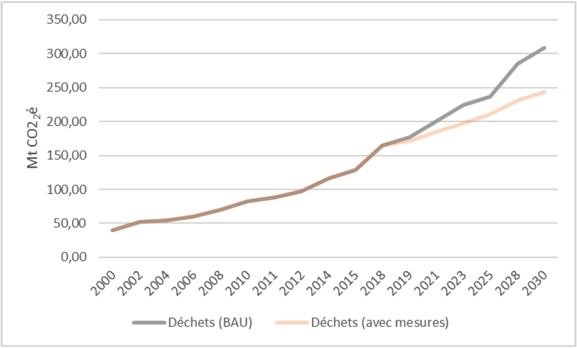
Figure 4: Waste sector emissions projections
Waste emissions from landfills will continue to decline as more waste is disposed of preferably by other means, such as open burning, biological waste treatment and recycling.
Although waste management is on a small scale, the DRC policy on the matter encourages landfilling which helps to advance this waste management policy. It should continue with small improvements in the efficiency of landfills and then extend to the recovery of these deposits of waste dumped around major cities. As the proportion of waste going to landfill is expected to continue to increase even though emission reductions are expected to continue for some time, as emissions lag behind waste disposal.

Figure 5: Agriculture sector emissions projections

Figure 6: Evolution of emissions from the Energy sector
The DRC is vulnerable to the various effects of climate change and does not have adequate capacities to deal with them. Indeed, the ND-GAIN index ranks the DRC 5th in the world among the countries most vulnerable to climate change in terms of their ability to adapt2. The impacts of climate change are already perceptible across the country, in particular by the persistence of heat waves, violent rains, land degradation, particularly by erosion, the lengthening of the dry season, the increase in the sequences of drought during rainy seasons, and floods3.
Climate projections in the DRC over the next few decades predict an increase in temperatures of around 3ºC to 5ºC by 2100, a decrease in precipitation and an increase in its variability, as well as an increase in extreme phenomena4. These climatic variations will have a significant impact on the main economic sectors of the country. The National Action Program for Adaptation to Climate Change (PANA, 2006) has identified urgent and priority actions in terms of adaptation to climate change in the sectors of water resources, forestry, agriculture and the coastal area.
The process of the National Adaptation Program (NAP, 2021) consists of integrating the adaptation dimension into national and provincial development planning by focusing on the following nine priority objectives:
Manage forest ecosystems and biodiversity;
Strengthen the resilience of the agricultural sector;
Manage climate risks in smallholder agriculture;
Reduce disaster risk and protect coastal areas;
Ensure the management of water resources and environmental sanitation;
Strengthen the resilience of the health sector;
Guarantee people's access to energy;
Protect energy production infrastructure; and
Improve energy efficiency.
Fifty-two (52) priority adaptation actions are proposed in the table below. Based on experiences with global and national level reporting, the indicators have the potential to position the DRC's envisioned commitment and robust efforts to address the challenges of adapting to climate change.
Table 1: Priority adaptation actions
| Sector | N⁰ | Shares | Estimated cost (USD billion) |
|
Forest |
1 |
Development of projects for the development of forest resources with local communities and indigenous people by ensuring the application of legal provisions |
1,15 |
|
2 |
Reforestation of degraded areas with species of great ecological and economic value |
1,61 |
|
|
3 |
Development of agroforestry plantations in degraded areas |
0,58 |
|
|
4 |
support for sustainable artisanal fishing micro-projects and fish farming |
0,23 |
|
|
5 |
Promotion of projects with reduced impact on forest ecosystems with a view to diversifying the income of populations |
0,06 |
|
|
6 |
involvement of local populations in the management of forest ecosystems on their territory |
0,06 |
|
|
7 |
Valorization of the traditional knowledge of local populations linked to the conservation of ecosystems |
0,06 |
|
|
8 |
Strategic coordination of climate change adaptation programs, plans, initiatives |
0,06 |
|
|
9 |
Promotion of sustainable land management |
0,50 |
|
|
Agriculture |
10 |
Integration of climate change into the planning and budgeting of all sectors at different scales (national, provincial and local) |
1,27 |
|
11 |
Production and dissemination of climate-resilient seeds |
0,92 |
|
|
12 |
Development of a zoning program in order to define the zones to be allocated specifically to the agricultural activities |
0,58 |
|
|
13 |
Collection, processing and regular dissemination of climate data by INERA and METTELSAT for seasonal forecast |
0,23 |
|
|
14 |
Popularization of soil and water management techniques in agriculture |
0,69 |
|
|
15 |
Support for the structuring of farmers' organizations with a view to improving agricultural governance |
0,29 |
|
|
16 |
Support for the establishment of production and marketing chains for agricultural products with a view to improving income of rural farmers |
0,17 |
|
|
17 |
Creation and rehabilitation of agricultural service tracks |
0,69 |
|
|
18 |
Promotion of (i) cultural practices allowing the sedentarization of agricultural activities, (ii) resilient seeds, and (iii) soil and water management techniques in agriculture |
0,23 |
|
|
19 |
Rehabilitation and strengthening of meteorological observation stations across the country |
0,17 |
|
|
20 |
Capacity Building for Women Empowerment |
0,23 |
|
|
21 |
Development of alternatives to wood energy in order to protect the forest (solar, gas, or at least improved stoves, etc.) |
0,17 |
|
|
22 |
Strengthen capacities to adapt to the impacts of climate change on agricultural production and food safety |
0,06 |
|
|
23 |
Support for research and innovation to strengthen the resilience of the agricultural sector to the effects of climate change |
0,23 |
|
|
24 |
Creation of Agricultural Business Clusters and promotion of agro-business |
0,46 |
|
|
25 |
Implementation of early warning systems |
0,58 |
|
|
26 |
Implementation of response measures in the event of natural disasters |
2,88 |
|
|
27 |
Establishment of subsidy mechanisms for rural producers with a view to adopting new agro-ecological practices |
0,23 |
|
|
Coastal area |
28 |
Assessment of coastal ecosystem vulnerability and human and institutional capacity needs |
0,58 |
|
29 |
Establishment of an early warning system for coastal areas (floods, drought, soil erosion, landslides) |
0,29 |
|
|
30 |
Implementation of erosion control measures in the coastal area, especially the area between Banana and Nsiamfumu (26 km) |
0,43 |
|
|
31 |
Support for climate change resilient activities generating household income |
0,83 |
|
|
32 |
Development of educational and information programs sensitive to disasters and climate risks |
0,23 |
|
|
Water resources |
33 |
Sanitation strategy and policy development |
0,01 |
|
34 |
Development of water resources development and management plans by hydrological basin |
0,35 |
|
|
35 |
Creation/Rehabilitation of water supply structures in villages |
0,92 |
|
|
36 |
Development and management of waterways and rivers integrating environmental issues. |
0,46 |
|
|
37 |
Strengthen the resilience to climate change of rural communities through healthy school and village programs |
0,35 |
|
|
38 |
Integration of climate risks for the provision of sanitation infrastructure and services |
0,22 |
|
|
39 |
Production, management and dissemination of information on water resources and agro-hydraulic developments |
0,06 |
|
|
40 |
Improved access to drinking water and basic sanitation, as well as hygiene practices for rural and peri-urban populations |
0,23 |
|
|
41 |
Improved access to sustainable waste management services and wastewater treatment |
0,20 |
|
|
42 |
Improving accessibility to roads and public spaces and opening up rural areas |
0,32 |
|
|
Health |
43 |
Construction/rehabilitation of health facilities |
0,92 |
|
44 |
Capacity building for access of vulnerable populations to basic health services |
0,88 |
|
|
45 |
Integration of the gender approach in the consideration of climate change issues |
0,23 |
|
|
46 |
Integration of climate change impacts into national health sector policies |
0,06 |
|
|
47 |
Assessing health vulnerability and strengthening the preparedness of health systems to address the burden of disease attributable to climate-sensitive diseases |
0,06 |
|
|
Energy |
48 |
Promotion of an economic model to support renewable energies (solar, wind, biomass systems) |
0,40 |
|
49 |
Improve Energy Transition Modeling Techniques to National and Provincial Scale Energy Efficiency Models |
0,23 |
|
|
50 |
Development of water retention basins, construction of dykes to protect electricity production infrastructure |
0,35 |
|
|
51 |
Promotion of the rational use of electrical energy, improvement of the management of the energy distribution network system |
0,17 |
|
| TOTAL | 23,08 | ||
Successful implementation of the DRC's NDC requires an effective Measurement, Reporting and Verification (MRV) system, allowing the country to monitor the effectiveness of its mitigation and adaptation measures and facilitating its access to finance climatic.
The DRC will develop an MRV framework in accordance with the requirements of the Paris Agreement that will allow the government to effectively monitor the progress of the mitigation and adaptation activities identified in this updated NDC, in accordance with the reporting standards of the UNFCCC, and will put in place a continuous monitoring and evaluation framework to ensure that the country is progressing towards achieving its objectives for 2030. This will constitute an indicator for each of the main emitting sectors, which could be used to international reports as well as for national monitoring of the implementation of the NDC. This indicator framework will also make it possible to monitor the reference emissions (BAU scenario) as well as the emissions resulting from the implementation of the NDC mitigation measures.
Figure 7 below summarizes the institutional arrangements for monitoring NDC implementation, including the national NDC MRV process.

Figure 7: Institutional arrangements for monitoring DRC NDC implementation
To achieve the conditional objectives, the DRC expects financial, technological and capacity building support from its technical and financial partners, global funds and bilateral/multilateral agencies and development partners.
These funds will be used to strengthen limited national resources and technical capacities to scale up climate action in the DRC.
The activities of the revised NDC will be implemented for 10 years (2021-2030) by integrating them into the annual budget plans at the national or provincial level as various project and program subsidy policies.
Key elements of NDC implementation are:
Governance: Key laws and regulations should be enacted and institutional capacities strengthened to facilitate the implementation of the NDC.
Finances: A financing and investment framework for the NDC should be developed, as well as a strategy aimed at rationalizing access to public funds while mobilizing private sector investments. This financing framework should facilitate effective access to international climate funds, including the green climate finance program.
The Institutional Mechanism: The implementation of the NDC will be done under the leadership of the Ministry of Environment and Sustainable Development (MEDD), in collaboration with various sectoral ministries concerned at the local, provincial and national level and other stakeholders, in particular the youth, women and indigenous people.
Capacity building and technology transfer: It will be necessary to identify capacity building needs both in terms of expertise and technology to enable the implementation of relevant policies and to optimize collaboration between key institutions and partners.
Gender equity, participation of young people and indigenous peoples: this involves maximizing the involvement of women, young people, indigenous peoples and other marginalized groups in carrying out the various planned interventions, particularly in decision-making and sharing benefits arising from the implementation of the NDC.
Communication: it will be necessary to develop clear lines of communication between different levels of governance (local, provincial, national and international) and between different sectors and stakeholders, including women, indigenous peoples and young people.
1.1.1. National development goals and plans
The Democratic Republic of Congo (DRC), straddling the equator, extends over 2,345,409 km² and covers most of the Congo Basin, estimated at 3.7 million km². Its population is estimated at 91.994 million5 inhabitants, with a population growth rate of around 3.1%.
The DRC is committed to the 2030 agenda and has adopted its National Strategic Development Plan for the period 2019-2023 (PNSD), which is aligned around the Sustainable Development Goals (SDGs). Indeed, through this PNSD, the vision of the DRC towards emergence by 2050 is sequenced in three phases, namely:
Achieve middle-income country status in 2028, GDP per capita raised to 1050 USD;
Reach emerging country status in 2040, with a GDP per capita of 4000 USD;
Join the club of developed countries in 2050, for a GDP per capita of 12,000 USD.
The PNSD, with its variations at the provincial level, Provincial Development Plan (PDP), revolves around five (5) main pillars below:
Pillar 1. Valorization of human capital, social and cultural development;
Pillar 2. Strengthening of governance, restoration of State authority and consolidation of peace;
Pillar 3. Consolidation of economic growth, diversification and transformation of the economy;
Pillar 4. Land use planning, reconstruction and modernization of infrastructure; and
Pillar 5. Environmental protection, fight against climate change and sustainable and balanced development.
The environmental protection and fight against climate change pillar, is inherently cross-cutting, aims to integrate environmental issues and climate change concerns into all sectoral policies and strategies in order to achieve resilient and low-carbon development. The conservation of tropical forests is a key issue that is part of national efforts to reduce emissions from deforestation and forest degradation, including conservation, sustainable management of forests and enhancement of carbon sinks. carbon (REDD+).
The DRC has compiled an inventory of the most common climate risks and threats due to climate change and has taken measures to address them. To this end, the Ministry of Environment and Sustainable Development coordinated the development of the Policy, Strategy and Action Plan to Combat Climate Change (PSPA-CC; revised version 2020). A National Adaptation Plan (NAP), for the period 2022-2026, has also been developed. This plan mainly aims, in a concerted and multi-sectoral approach, to strengthen the resilience of the country and the integration of concern for adaptation to climate change in planning and budgeting at both national and provincial levels.
The national sustainable development strategy and the government's 2021-2023 action program revolve around 4 sectors with 62 priority areas of intervention including, among others: (i) governance and security, (ii) access to energy and drinking water, (iii) protection of the environment and natural resources (renewable and non-renewable), (iv) transport, (v) housing, (vi) the economy, (vii) education, training and health.
It should also be noted that other sectoral policies and strategies have been adopted to support government action. These include, among others:
In order to promote a rational and sustainable use of natural resources which involves the maintenance of ecological processes, protection of biodiversity and adoption of sustainable production systems, the DRC has developed and adopted in 2020 a national land use planning policy. This policy should lead to zoning and the definition of a master plan for the optimal allocation of the territory, setting up sustainable human settlements and thus establishing a quality living environment.
In the land use plans, the DRC ensured the systematic integration of forest resources, including peat bogs and this, in a process of transparent consultation, in order to maintain consistency in the publication of all contracts. land uses (agriculture, forests, mines, hydrocarbons). With regard to the forestry sector and other land allocations, taking into account the implementation of nature-based solutions, the DRC will ensure synergies with land use planning and land tenure security. In addition, in the field of land, the DRC has undertaken to conduct a legal review of land concessions of more than five hectares in pilot provinces.
In 2008, the DRC developed and adopted its national gender policy (PNG) and its gender strategy to integrate this dimension into sectoral development plans, particularly the Agriculture and Rural Development sectors, etc. The equality and empowerment of women remain a concern of the Congolese authorities. To this end, several efforts remain to be made to materialize this political will to improve the gender situation in the DRC.
The DRC has developed its National Agricultural Investment Plan (PNIA), 2013-2020. Its overall objective is to stimulate sustained annual growth in the agricultural sector of more than 6%, which is essential for reducing poverty, ensuring the food and nutritional security of the Congolese populations and generating jobs and sustainable incomes. This plan is the unifying framework for all current and future programs and projects in the agricultural sector. This document, currently being revised, constitutes the national planning framework for national and external funds for the agricultural sector and rural development.
Since 2009, the electricity policy has been technically validated by all stakeholders. Current efforts are focused on developing clean cooking strategies.
In 2014, Law No. 14/011 of June 17, 2014 relating to the electricity sector was enacted. It establishes the liberalization and total opening of the electricity market to the private sector and also allows:
the distribution of concurrent competences in the sector, between the State, the provinces and the decentralized territorial collectivities; and
the creation of a Regulatory Authority for the electricity sector and the National Agency for electrification and energy services in rural and peri-urban areas.
In 2009, the DRC developed its national youth policy articulated around 15 areas. It aims to protect Congolese youth against anything that may affect their education, health, integral development and fulfillment.
The 9th area of this policy, entitled "Youth, environmental protection and sustainable development", the specific objective of which is to improve the living environment and the environment of young people, revolves around three main axes: after :
Education of young people in environmental protection;
Improving the living environment of young people, in particular housing, drinking water, energy, sanitation; and
Promoting environmental protection and volunteerism among young people.
The National Sanitation Policy (PONA), drawn up in 2013, aims to help improve the population's access to adequate sanitation services and infrastructure. Specifically, these include, among others:
Promote the sanitation sector to all stakeholders;
Put in place mechanisms for mobilizing endogenous and exogenous financial resources in the sanitation sector;
Improve sanitation sector governance;
Driving a change in mentality and behavior in sanitation;
Harmonize the different approaches of the sanitation sector; and
Promote the development and implementation of sub-sector programs.
The Ministry of Environment and Sustainable Development (MEDD) through its Department of Sanitation (DAS) is nationally responsible for the sanitation sector, in particular the management of municipal waste, and is in this sense responsible for regulating this sector. Several ministries are involved in solid waste management. These include the Ministry of Infrastructure, Public Works and Reconstruction (MITPR) via the Office of Roads and Drainage (OVD) which intervenes in the cleaning of gutters, rivers and major collectors. Due to the dumping of waste on roadsides and in drains, the sanitary environment of low-income or poor residential areas is particularly poor.
1.1.2. Main socio-economic and environmental development challenges
Despite the development of many strategic documents and action plans in various areas, insufficient funding has limited the implementation of large-scale actions.
Most of the actions carried out in the field of environmental protection and the fight against climate change have been financed by various development partners, and have focused on the conservation of forests and biodiversity, by building capacities, including the development of planning tools, the sustainable management of natural resources and the strengthening of the resilience of ecosystems and communities.
In this area, the main challenges remain: (i) the mobilization of financial resources for the implementation of the main legal and institutional reforms; (ii) the drafting of texts for the implementation of the framework law on the environment in the DRC; (iii) strengthening collaboration and intersectoral coordination between the different sectors (mines, agriculture, forestry); (iv) the definition of a real policy in this sector, and (v) the definition of a real policy in the forestry sector, and (v) the effective implementation of projects such as the Ibi Batéké project included in the Clean Development Mechanism (CDM); the carbonization enhancement and flare gas recovery projects at Muanda under the Nationally Appropriate Mitigation Action (NAMA) process; and the formulation of the Low Carbon Development Strategy (LEDS), all planned.
On the economic front, it was noted a continuous decline in the DRC's economic growth rate reaching 0.8% in 2020, exacerbated by the COVID-19 pandemic, when it was 4.4% in 2019. However, mining sector growth is reported to have increased by 6.9% in 2020 (compared to 1% in 2019). On the other hand, other economic sectors contracted by 1.6% (compared to 5.7% in 2019) due to the restrictions due to the pandemic, the confinement of commercial activity and the limitation of public expenditure.
It is estimated that public expenditure in the agricultural and rural sector reaches 5.9%, which is still far from the Maputo criterion of allocating at least 10% of the national budget to the agricultural and rural sector, a difficult target for the DRC to achieve. The agricultural and rural sector employs nearly 70% of the country's active population. Moreover, its development remains essential for poverty reduction, because it is established that agricultural production would progress more rapidly than the trend scenario retained by the PNIA (2013-2020) which provides that "if current trends are confirmed, the agricultural sector will continue to grow at a modest rate of 3% per year”.
The efforts that will be necessary to accelerate agricultural growth (+6%/year) to lead the DRC to a balanced diet in 2025 (to feed 116 million consumers) will not be possible without a rapid modernization of agriculture. It will be necessary to double the cultivated areas from 8 to 16 million hectares, which would represent an annual growth of around 6%, while the number of agricultural households is growing more slowly (+ 2%/year) than the average growth rate. of the population (+ 3%/year), characterized by a rapid rate of urbanization (+5%/year)6.
This sector contributes 38% to the formation of GDP and participates for more than 60% in job creation. Although it is the main means of subsistence in rural areas, it fails to ensure the country's food independence and to generate sufficient income and sustainable employment. The agricultural sector is essentially characterized by rudimentary and itinerant slash-and-burn cropping systems for subsistence production, exacerbated by the scarcity of agricultural inputs, the isolation of production areas, in particular due to the deterioration of rural roads, the growing impoverishment of the peasant mass, the lack of supervision and the impacts of climate change.
Despite the progress made, however, it is the case that:
The DRC is in a precarious social situation which does not seem to have improved significantly over the past two decades according to the SDG7 report. It is characterized by the poverty of the population, contrasting with the immensity of the natural potential of the country, more accentuated in the rural areas with strong demographic growth weighing on the demand for social services, with an unequal distribution between the provinces;
The DRC remains one of the countries with the lowest human development index among 175 countries, according to the Human Development Report 2020. The proportion of the population not reaching the minimum level of caloric intake fell from 31 % to 73% during the 1990s. Although decreasing thereafter, food insecurity remains high and today affects about 76% of the population, while food accounts for 62.3% of the total expenditure of Congolese households8;
The rate of access of the population to electricity remains very low: 9% at the national level (1% in rural areas, 30% for cities) while the average in sub-Saharan Africa is 24.6%;
Finally, unemployment, especially among young people (15-24 years9), due to strong demographic growth, remains at a very high level - 18% nationally - and particularly affects young urbanites (32%).
The numerous reforms undertaken and the strong economic growth recorded over the last decade testify to a significant improvement in the socio-economic conditions of the population whose income comes mainly from the informal sector.
The DRC extends between 5°20' North latitude and 13°17' South latitude; and longitudes 12°15' and 31°15 East of the meridian of Greenwich. It shares its 9,165 km of borders with nine countries including the Republic of Congo, the Central African Republic, South Sudan, Uganda, Rwanda, Burundi, Tanzania, Zambia and Angola, and nearly 40 km of coastline on the Atlantic seaboard. Under the revised constitution of February 2006, the Democratic Republic of Congo is made up of the City of Kinshasa and ten (25) provinces, each with legal personality (Figure 1).
Its relief is dominated to the east by two mountain ranges (Virunga and Mitumba) and a region of large lakes in the great rift and stepped plateaus determining in the center a large depression, the "Central Basin". This is covered with dense tropical forest, dominated by large wetlands and inland lakes (Tumba and Mai-Ndombe in the center-west).
The Congo River basin, the largest of the three (the Congo, Nile and Shiloango river basins), collects more than 80% of its waters from the tributaries (about thirty large rivers) of the Congo River, which is 4,700 km long with an average flow of 41,000 m³ of water per second at its outlet into the Atlantic Ocean, there are also 15 lakes across the country which represent a total area of 180,000 km2. Its dense hydrographic network benefits from a well-distributed rainfall regime across the national territory.

Figure 8: Administrative map of the Directrices
Source: http://rdc-snsf.org/portal, MEDD, June 2021
The soils of the DRC are very varied and represent approximately 227 million hectares. Their classification was carried out according to a morphogenetic system which combines morphological criteria observable or measurable on the profile with genetic considerations deduced from chemical, mineralogical, geomorphological, climatological and other observations. They are grouped into five main types (Ferralsols, Nitosols, Gleysols, Vertisols and Andosols), the most dominant of which are Ferralsols and Nitosols (Figure 2).
In addition, the central basin of the Congo Basin which includes the DRC and the Republic of Congo abounds in the great tropical peat bog of the world. It covers an area of nearly 145,000 km2 with a large stock of carbon and a potential source of GHGs estimated at 30 gigatonnes, or the equivalent of two (2) years of global greenhouse gas (GHG) emissions. The DRC alone has 2/3 of this peat bog, or approximately 101,500 km2.

Source: US Geological Survey, 2003
The DRC is endowed with immense natural resources, including:
a diversified wealth of the basement, such as uranium, copper, zinc, cobalt, gold, diamond, tin, colombo-tantalite (coltan), chromium, manganese, wolframite, silver,, cadmium, lithium, carbon and pyrochlore; etc
offshore oil on the Atlantic coast.
a diversified floristic richness:
approximately 152 million hectares of natural forests (10% of all tropical forests in the world and 67% of the national territory; dense humid forests covering nearly 99 million hectares, of which just over 83 million are low altitude) (De Wasseige et al., 2009);
the vegetation is dominated by large formations including swamp, ombrophile, afro-montane, dry forests and savannas;
all the branches combined, count nearly 377 families, 2,196 genera and 10,324 species.
significant wildlife wealth (MEDD, 2013)10 characterized by:
352 species of reptiles including 33 endemic; 168 species of amphibians,
1086 species of birds including 23 endemic;
421 species of mammals including 28 endemic, and more than a thousand species of fish.
The DRC is located in the Intertropical Convergence Zone (ITCZ), which creates extreme climate variability in the country. It is characterized by a hot and humid climate over most of its territory and abundant rainfall, with 140 to 160 rainy days per year. Its climate system is as follows:
in the center of the central basin, rainfall is between 1800 and 2200 mm per year with an average annual temperature of 27°C;
beyond latitudes 3°N and 3°S, we find the tropical climate with a dry season whose duration increases away from the equator (4 months in the western part and more than 5 months in the southeast, where less than 1000 mm of precipitation is recorded per year);
in the mountainous regions of the east, the atmospheric conditions vary with altitude, where rainfall can reach 3000 mm per year and where the average temperature can drop by up to 1°C when the altitude rises by 180 m;
in the coastal zone, one encounters the driest climate (810 mm in Banana), where the effects of the cold current of Benguela are felt.
The mean annual temperature has increased slightly at a rate of +0.17°C per decade over the past 30 years. For the future, global climate model projections suggest a strong average increase in temperature. For the end of the century, a warming of the order of +1.7 to +4.5°C (compared to the reference period of 1971 to 2000) is probable. In addition, a strong increase in the duration of heat waves and a strong reduction in the duration of cold spells are predicted (Haensler et al., 2013)11.
With regard to the total amounts of annual precipitation, no substantial change has been observed over the past 30 years. For the future, the majority of climate models predict a trend towards a slight increase in total annual precipitation. For the end of the century, a change in total annual precipitation of the order of 0 to +8% (compared to the reference period of 1971 to 2000) is probable. Furthermore, the projections suggest a trend towards more intense and considerably more frequent rainfall, while no clear trend is projected with regard to the duration of drought periods (idem).
Despite the vastness of its natural resources, the DRC still remains among the least developed countries, with nearly 70% of the population depending almost exclusively on agriculture and forestry resources for their survival.
About 67% of the national territory is covered by tropical forests, representing 60% of the forests of the Congo Basin and nearly 10% of this resource at the global level. The DRC is thus the second tropical forest country in the world.
The DRC has experienced several multifaceted crises since the 1970s which have spared no sector of national life. These repetitive crises have plunged the country into a serious economic and social situation which is, among other things, the basis of the generalized state of poverty of the population and which ranks the DRC at the bottom of the scale on the human development index. (HDI), i.e. 179th out of 189 countries (UNDP, 2019).
2.3.1. Agriculture
The DRC has more than 80 million hectares of arable land of which only 10% is currently exploited. The diversity of its climatic system and its important hydrographic network make it possible to practice a varied range of agricultural speculations. The expanses of both grassy and wooded savannas are likely to support a breeding of more or less 40 million head of cattle12. This sector has suffered a long decline exacerbated by conflicts and the abandonment of large farms, agricultural productivity fell by 60% between 1960 and 2006.
Agricultural practice is essentially rainfed and peasant with subsistence food production (self-subsistence) using rudimentary production equipment with low yield and low input consumption. These farms are spread over more or less 4 to 7 million hectares and are organized by agricultural households, each farming an average of 1.5 hectares per year13.
The increase in production is due more to the increase in sown areas than to the improvement in yields. Unlike other systems on the continent, this mode of exploitation is not associated with livestock, a source of organic matter.
National animal production comes mainly from small and large livestock as well as poultry. Their contribution is respectively 34.5% for pigs, 24% for goats, 22.3% for cattle, 15% for poultry and 3.9% for sheep14.
Small livestock and poultry have the advantage of providing farmers with products, regularly and closely, enabling them to maintain a certain level of income and improve their diet.
The annual fish production of the DRC, estimated at about 220,000 tonnes on average out of an annually exploitable potential of 707,000 tonnes, i.e. a little over 30%, corresponds to an annual average disposal of 5.2 kg per inhabitant, a much lower availability to the international standard set at 13 kg per inhabitant15.
2.3.2. Forestry and other land uses
The Congolese forests are distributed on both sides of the equatorial line and thus include varied ecosystems. Evergreen and semi-deciduous moist forests occupy much of the central and western regions, large areas of edaphic forests grow in the northwest along the Congo River and its tributaries, while forests of pre-mountain and mountain extend over the eastern plateaus and on the slopes of the Mitumba Mountains. The richest forest massif and in one piece (approximately 100 million hectares) is circumscribed in the central basin.
Estimated at about 152 million hectares of natural forests (MEDD, 2016), they represent about 10% of all tropical forests in the world and more than 62% of those in Africa. Its relatively low deforestation rate over the past 30 years is estimated at between 0.4% in 2001 and 0.32% in 2005, compared to that of other tropical forest countries (MEDD, 2018).
In order to fight against the illegal exploitation of forests and to preserve what remains of the natural spaces, the DRC adopted Law 011-2002 of August 29, 2002 on the Forest Code which deals with clearing, degradation of forests, and problems of erosion. The code prohibits “any act of deforestation of areas exposed to the risk of erosion and flooding; any deforestation over a distance of 50 meters on either side of watercourses and within a radius of 100 meters around their sources”. In addition, the code specifies that “all deforestation must be compensated by reforestation equivalent in quality and area to the initial forest cover (…) and requires obtaining a deforestation permit for an area greater than 2 ha”.
The forestry sector in the DRC is likely to contribute significantly to both the diversification and the recovery of the national economy. Despite its enormous potential, the contribution of this sector to reducing the poverty of the Congolese people is still timid or even insignificant. This situation is due, in part, to the fact that for several decades, the forestry sector had not aroused much interest among political decision-makers; which did not allow this sector to benefit from all the attention to which it is legitimately entitled like other sectors of the national economy, in this case the mining sector.
2.3.3. Energy
The DRC is full of enormous potential, diversified in energy resources16 whose sustainable management constitutes major challenges which include among others:
hydroelectric resources with a potential estimated at 110 GW (44% are concentrated in the Inga site alone, located in the Kongo-Central Province) equivalent to 30 million tonnes of oil per year;
biomass with approximately 152 million hectares of natural forests;
mineral coal with reserves estimated at 720 million tonnes,
oil with reserves estimated at 1.5 billion barrels,
the methane gas reserves in the Coastal Basin, estimated at 10 billion m³ at sea and 20 billion m³ in Lake Kivu (nearly 50 million normal cubic meters (Nm3)),
uranium ore with significant reserves,
geothermal resources;
bituminous shale and tar sands whose reserves are poorly known; and
a solar potential whose sunshine band is between 3500 and 6000 Wc/m2/d
The PDGIE report (2018) provides information in terms of energy consumption on the predominance of wood energy, which in 2018 represented a share of 94.2%.

Figure 10: Energy balance of the DRC for the year 2018
Electricity production is largely provided by the National Electricity Company (SNEL) with an installed capacity of 2,456 MW. Some private independent producers such as Electricité du Congo (EDC) for the city of Tshikapa; SENOKI in Butembo, SOKIMO, Energie du Kasaï (ENERKA) for the city of Mbuji-Mayi, Electricité du Nord Kivu (ENK), Virunga Sarl, NURU Sarl, Caritas Développement, etc., and a few self-producers such as Sucrière de Kwilu-Ngongo, PERENCO, MIBA, Kibali Gold Mining, Gécamines certain religious denominations, the National Railway Company (SNCC), etc. total installed hydropower capacity of 364 MW. However, the population's access rate to electricity, one of the lowest in the world, is estimated at 9% (SE4ALL-RDC, 2019).
2.3.4. Transportation
Transport infrastructure in the DRC is among the least dense, dilapidated and impracticable. In many provinces of the country, connectivity to the capital, Kinshasa, by road is difficult and most provinces are not interconnected. Despite having one of the largest river networks in the world, river transport is often hampered by high levels of silting, long waiting times at ports due to poor infrastructure and the governance.
Ground transport in the DRC consists mainly of motorized road vehicles, as there is no suitable infrastructure for non-motorized vehicles (i.e. cycle lanes, safe storage and convenient and convenient bicycle rentals). affordable) and the railway network is almost abandoned or destroyed. Motor vehicles mainly depend on personal passenger cars.
Vehicle fleet statistics up to 2015 indicate a total of 1.64 million registered vehicles nationwide, mainly consisting of passenger cars (INS, 2015).
Public transport includes public and private buses, minivans as well as exclusive and shared taxis, all operating without any coordination, resulting in very low occupancy rates. The market share of mass transport in the DRC is low due to the impassability, lack of security and limited reach of public transport compared to the attractiveness of owning a private automobile.
Driving habits in the DRC are characterized by a relatively low range with a high rate of congestion and frequent stops at short time intervals. It is estimated that 50% of trips have a distance of less than 10 km, 25% of stops are less than 20 seconds and the total stop time per trip corresponds to more than 15% of the trip time.
In addition, these observations reflect stop-and-go driving patterns, resulting in inefficient operation of internal combustion engines, and a high rate of fuel consumption and pollutant emissions as a result.
The road network of the DRC comprises a total of 153,209 km (INS, 2014) of roads distributed as follows:
58,509 km of roads of general interest, of which around 3,000 km are paved.
7,400 km of urban roads;
87,300 km of roads of local interest or agricultural service
In terms of aeronautical activities, the DRC has nineteen (19) commercial airports, four of which are international in service (Kinshasa/N'djili, Goma, Kisangani and Lubumbashi). At least eleven airlines (Congo Airways) and private companies operate for the flight of passengers and the chartering of goods to all airports located in the DRC. In 2016, more than 1.77 million air passengers were counted compared to 1.61 in 2010 (SDG Report, 2020).
As for river and lake activities, the DRC has nearly twenty service ports or functional commercial ports, including Matadi, Boma, Kinshasa, Ilebo, Kalemie, Uvira, Goma, Bukavu, Kisangani, Mbandaka, Ubundu, Kindu, and Mushimbakye in Baraka., etc. These ports are mostly under the authority of the Congolese Transport and Ports Company (SCTP). The main ports in the south-east of the country are governed by the Société Nationale des Chemins de Fer du Congo (SNCC).
The port of Matadi is the country's industrial entry and exit point. It is connected to the port of Kinshasa by road and rail. The port of Kinshasa welcomes approximately 78% of the boats coming from the interior of the country.
2.3.5. Industry
Although the industrial fabric of the DRC remains embryonic, this sector, like agriculture, infrastructure, energy, health, education, housing and others, is a priority of the Government of the DRC. The development strategy of the industrial sector is mainly focused on the creation of Special Economic Zones (SEZ), agro-industrial parks and growth poles.
The infrastructure deficit affects the industrial development of the DRC, particularly manufacturing. The latter represents only 14% of GDP in 2018, i.e. less than 12 USD per capita. This low level illustrates the obvious difficulties faced by entrepreneurs, particularly in terms of access to electricity and public transport infrastructure (roads, railways, airports, rivers and lakes). The repercussions are eloquent, particularly in terms of economic competitiveness and jobs created. Employment in manufacturing represents only less than 7% of total employment.
With regard to mining production, the DRC is "a geological scandal" as its mining resources are important and diverse (copper, cobalt, colombo-tantalite, gold, diamonds).
An engine of growth and a major contributor to the national budget, the DRC's mining sector is one of the country's strategic sectors. According to statistics, from 2003 to 2017, mining production increased from 9,370 tons to more than one million tons of copper! That is an increase of 10.75% (INS, 2017).
The DRC's vision in the fight against climate change is to promote a green economy, with low carbon emissions and resilient to the impacts of climate change, while rationally and sustainably managing its significant natural resources in order to guarantee ecological balance. and the social, economic, cultural and environmental well-being of its people.
Indeed, the DRC, like all Parties to the UNFCCC, is resolutely committed to taking urgent measures to mitigate its greenhouse gas emissions and adapt to the effects of climate change, in accordance with the Paris Agreement especially in its article 4.17
To this end, the DRC ratified the United Nations Framework Convention on Climate Change (UNFCCC) in 1997, the Kyoto Protocol in 2005 and the Paris Agreement in 2017. In addition, it submitted to the UNFCCC its three first national communications to the UNFCCC, respectively in 2001, 2009 and 2015 and its National Adaptation Action Program (NAPA) in 2006. It also submitted its Forest Reference Emission Level (NERF) in 2018 .
Although its greenhouse gas emissions are among the lowest in the world (MEDD, 2015), the DRC is very vulnerable to the impacts of climate change. Therefore, adaptation to climate change is a major concern and priority for the country. The DRC's contribution to climate change in terms of greenhouse gas (GHG) emissions is relatively small, although emissions from agriculture, deforestation, land use, consumption energy, and waste is a significant part of its carbon footprint, to demand appropriate climate action.
In 2015, the DRC submitted its Intended Nationally Determined Contribution (INDC) to the UNFCCC, defining its adaptation and mitigation objectives. In 2017, this became its first NDC, in accordance with the Paris Agreement.
This first NDC was based on the DRC's third national communication submitted to the UNFCCC in 2014, as well as on other sectoral policies, such as the National REDD+ Strategy Framework (MEDD, 2012) and other key national orientation documents. The targeted reduction target, entirely conditional, was 17% taking into account three main sectors, namely Energy, Agriculture and Forestry associated with the following gases: CO2, CH4 and N2O over the period 2021-2030.
This NDC, whose reduction target set at 21% (conditional at 19%, and unconditional at 2%), updates and strengthens the first in terms of contributions to mitigation and adaptation, on the one hand, and through improved data collection, in-depth technical analysis and extensive stakeholder engagement on the other. It includes, in addition to the three aforementioned sectors (Agriculture, Forestry and Energy), that of Waste.
4.1.1. Business as usual (BAU) emissions forecast
The mitigation contributions presented in this revised NDC are based on the prospective of a relative reduction in GHG emissions between 2018-2030 compared to baseline emissions estimated using the 2006 IPCC guidelines18 representing the national trajectory in l lack of mitigation measures (BAU).
This requires the development of BAU sectoral forecasts of activities and associated emissions throughout the NDC commitment period; subsequent monitoring of progress against this baseline through the implementation of mitigation projects will require continuous updating of the abatement scenario.
The projections used in this revised NDC are constructed through an extrapolation of emissions from the reference period of the first Biennial Updated Report and the DRC's national greenhouse gas inventories. This is a linear, simple, transparent, intuitive and easily reproducible projection in the medium term until 2030, based on the IPCC's level 1 methodology, from which they will evolve according to a scenario of the business-as-usual type (normal course cases without mitigating measures).
Modeling specific to the energy sector, based on the Model for Energy Demand Analysis (MAED-2 software, IAEA, 2007), was undertaken to estimate the current mitigation potential in this sector.
The MAED-2 software assesses future energy demand based on socio-economic, technological and demographic development scenarios in the medium and long term. Within this framework, two scenarios have been developed: the BAU scenario and the abatement scenario. The model systematically links the specific demand for energy to produce different goods and services identified in the model, to the corresponding social, economic and technological factors that affect this demand.
For the other sectors, the BAU and abatement scenarios were constructed using linear modeling tools.
4.1.2. National emissions modeling
As part of the implementation of the DRC's PNSD, three possible development scenarios have been considered to characterize the possible evolutions of the economy: the continuity scenario, also called the normal course of business scenario - BAU, the which translates the government's vision (optimistic scenario) and the intermediate scenario between the first two, alternative scenario.
This scenario is based on a continuation of the current situation in which the pace of economic growth is certainly high but suffers from fluctuations linked to hazardous turns in world markets. In light of the growth profile, the DRC will not be able to become an emerging country in 2030 and a developed country in 2050 if profound changes are not envisaged in the conduct of public policies. The reforms need to be deepened for more effective governance. Major transformations should be made at the level of the production apparatus, and the quality of human capital will also have to be substantially increased.
The main assumptions on which this scenario is based are as follows:
The mining sector continues to be the main driver of economic growth but is seeing its contribution gradually diminish;
Agricultural activity continues to develop but its expansion is not very significant;
The manufacturing industry continues to play a marginal role in economic growth and continues to suffer the pangs of foreign competition;
The services sector continues to expand, mainly from wholesale and retail trade (against a deterioration in the current account) and transport and telecoms;
Tax revenues from the exploitation of natural resources remain marginal;
Progress can be observed in the area of governance (political and economic) but it is relatively slow and limits the total investment rate;
The population continues to grow at the average annual rate of 3% as has been the case over the past fifteen years, which implies that the synthetic fertility index (ISF) has practically not changed;
The movements of populations due to the conflicts are reduced and the social fabric is rebuilt;
The country's political and security situation is stable, as is that of the Central African region.
This second scenario is optimistic in that it proposes to highlight the various efforts to be combined by the authorities. For the DRC to develop in 2050 according to the sequences defined by the government, it would be necessary to consider – courageously and relentlessly – a set of coherent and sustained actions over time to change its political, institutional, economic and financial landscape. Maintaining peace and strengthening the security of people and their property are two fundamental elements of the action to be taken by the government to set the country firmly on the path to development. At the macroeconomic level, inflation should be contained and the exchange rate should not experience major shifts. This would require significantly expanding the fiscal space state, improve the quality (or efficiency) of public spending, constitute important budgetary stabilizers and use them wisely, in the event of exogenous shocks.
In this third scenario, called alternative, it is assumed that the country becomes a middle-income country in 2025 and emerges in 2030 instead of 2030. In 2050, the country becomes developed. This change in the time horizons of expected progress has an impact on the growth rates to be displayed by the economy as well as on the policies to be pursued. Despite the change in the length of the first sequence of the trajectory, it would take considerable efforts to ensure that the DRC progresses as its government intends. At the macroeconomic level, it will be necessary to maintain rigor in the management of public finances and to have flexibility in the conduct of monetary policy because performance in terms of growth requires inflation not exceeding 3,
The main assumptions used to develop this scenario are as follows:
Agriculture is undergoing major transformations and is becoming one of the main pillars of economic growth and job creation;
Extractive industries continue to be dynamic thanks to a widening of the value creation chain and more efficient exploitation of hydrocarbons;
The construction and public works sector is experiencing remarkable expansion thanks to the combined efforts to expand the State's fiscal space and mobilize new sources of infrastructure financing (PPP and viable sovereign loans);
Manufacturing industries are developing at a sustained pace and are managing to penetrate other markets;
The tertiary sector remains dynamic thanks to the effects of the reconstruction, modernization and development of infrastructures;
The structure of GDP is gradually changing (the secondary sector will become the main pillar of growth in 2050);
Governance is experiencing rapid and sustained improvements against the backdrop of a coherent set of reforms affecting institutions and the functioning of the economy;
Social policies are effectively implemented to lower the ISF and make the most of the demographic dividend;
The return of displaced populations is possible;
The political and security context is calm both in the country and in Central Africa.
Of the three PNSD scenarios, only the alternative scenario was taken into account in the energy sector and considered as the BAU scenario. The analysis used to develop this revised NDC involved identifying a range of mitigation options (Abatement Scenario) within each of the NDC sectors for further consideration and quantitative analysis.
This scenario aims to highlight the various efforts to be combined by the DRC government to achieve a gradual and significant reduction in GHG emissions in the main emitting sectors.
The allowances used in this revised NDC are based on the assumptions below and reinforce it in several ways:
In the field of forestry and other land uses, the hypothesis is based on the REDD + strategy which is based on the studies of McKinsey et al (2009)20 and also the hypotheses envisaged in the NERF document whose projections of the annual growth of emissions due to deforestation are estimated at 50 MtCO2e;
In this forestry sector, we could obtain a cumulative reduction in emissions of 2.2 to 2.5 Gt CO2e by 2030;
The share of emissions that cannot be reduced may be offset by the effects of afforestation and reforestation projects intended for carbon sequestration, up to an estimated cumulative sequestration potential of 1.2 at 1.4 Gt CO2e;
By 2030, the combined effect of potential mitigation and sequestration levers could both offset total emissions estimated at 410 to 700 Mt CO2e according to the BAU reference scenario, and constitute a carbon sink of a capacity of around 20 Mt CO2e;
The BAU reference scenario of the evolution of degradation and deforestation in the DRC and the related emissions was developed on the basis of 'voluntary' assumptions of the country's socio-economic and demographic development. In this scenario, deforestation would reach 12 to 13 million ha by 2030, and degradation 21 to 22 million ha.
In agriculture, it is planned to double the cultivated areas from 8 to 16 million hectares, to observe accelerated growth (+6%/year) and thus ensure food balance by 2025 (feeding 116 million consumers) and this, thanks to a modernization of the sector.
In the Energy sector, mitigation efforts may be concentrated in the industrial, transport and residential sectors with the following assumptions:
More accentuated reduction in the energy intensities of petroleum products, specific uses of electricity, use of heat. This translates to a much more efficient energy intensity improvement in the economy.
In the agricultural sector, the abatement will relate much more to the management of agricultural residues because the agricultural development program provides for an increase in surface areas
In the waste sector, for the reduction scenario (organization of the sector: access of 60% of households to the waste management system, by developing operational mechanisms in at least 10 provinces.
For this adaptation component, the methodological approach consisted of an in-depth review of relevant documents on adaptation to climate change. The various national communications submitted by the DRC to the UNFCCC have allowed us to have a more or less broad overview of the degree of vulnerability of the various actors and economic sectors directly affected by climate change and disaster risk as well as the measures proposed. to deal with it.
The lessons learned from NAPA (agriculture, protection of the coastal zone and women and children) made it possible to understand the relevance of the actions envisaged and the measures to be considered for greater effectiveness and efficiency in strengthening resilience to the effects climate change.
In addition, the results of the process of drafting the initial NAP of the DRC and of the various specific studies carried out for this purpose, in particular (i) the institutional assessment of the obstacles and needs for the integration of adaptation in the planning of the development ; (ii) assessment of human capacity needs; (iii) consideration of gender and Indigenous Peoples in the development and implementation of adaptation measures; and (iv) opportunities for the involvement of the private sector in the financing of adaptation, made it possible to deepen the reflection on the relevant actions envisaged in this NDC and the establishment of financing needs.
Finally, the selection of adaptation interventions, parameters including indicators, baselines, milestones and targets was conducted through workshops, followed by in-depth consultations with teams of sector experts through various iterative discussions. with actors from different sectoral ministries and civil society delegates.
The DRC, Party to the UNFCCC, has initiated efforts to implement activities that lead to a reduction in emissions according to its national circumstances and capacities. This section consists of a brief reminder on the analysis of the trend in greenhouse gas ( GHG) emissions in the sectors whose measures are identified and proposes consequent mitigation strategies. It also presents other initiatives relating to greenhouse gas mitigation actions in the DRC.
The mitigation measures implemented by the DRC mainly concern the forestry sector, in particular the implementation of its national strategy to reduce emissions from deforestation and forest degradation (REDD+). In addition to the REDD+ strategy, the DRC's nationally determined contribution presents certain mitigation measures and actions in the energy, transport, agriculture and waste sectors.
However, to date, these few initiatives are less documented. However, the DRC is committed to improving its data collection and management system and to formalizing the arrangements institutions that support the collection, analysis, processing and communication of long-term information on mitigation measures and efforts to explore associated co-benefits.
In addition, the DRC does not have a specific methodology and associated hypotheses to assess the effects of the actions envisaged. Consequently, capacity building for project promoters and various stakeholders is essential at the national level to improve the monitoring and reporting of sectoral mitigation activities.
The revised 1996 IPCC Guidelines have been implemented for the estimation of GHG emissions reported in the three previous National Communications on climate change in the DRC. The first Biennial Update Report, on the other hand, is based on the IPCC Tier 1 approach in accordance with the 2006 IPCC Guidelines and its improvements21.
The analysis of the historical trend of GHG emissions, carried out within the framework of the 1st Biennial Updated Report of the DRC, which wants to be an emerging country by 2030 and this, in a vision of development towards an economy more and more decarbonized, shows that, during the period 2000-2018 (Table 3), the country's emissions are predominated by the "Forestry and other Land Use (FAT)" sector with nearly 86% of emissions, followed by far by Waste, Energy and Agriculture sectors with 11%, 0.86% and 0.61% respectively.
Table 2: Evolution of GHG emissions in the DRC by sector for the period 2000-2018 (Mt eq-CO2)
| Energy | PIUP22 | Agriculture | Forest | Waste | |
|
2000 |
3.36 |
0.09 |
3.70 |
483.74 |
39.79 |
|
2001 |
3.69 |
0.11 |
3.86 |
483.74 |
51.47 |
|
2002 |
4.02 |
0.14 |
3.76 |
483.74 |
51.83 |
|
2003 |
4.35 |
0.18 |
3.76 |
483.74 |
53.08 |
|
2004 |
4.68 |
0.24 |
3.75 |
483.74 |
54.33 |
|
2005 |
5.01 |
0.29 |
3.75 |
483.74 |
56.49 |
|
2006 |
5.34 |
0.33 |
3.76 |
483.74 |
59.70 |
|
2007 |
5.67 |
0.34 |
3.77 |
483.74 |
64.28 |
|
2008 |
6.00 |
0.24 |
3.76 |
483.74 |
69.87 |
|
2009 |
6.33 |
0.27 |
3.76 |
483.74 |
76.94 |
|
2010 |
6.66 |
0.27 |
3.89 |
483.74 |
82.24 |
|
2011 |
6.99 |
0.26 |
4.09 |
830.53 |
88.61 |
|
2012 |
7.32 |
0.23 |
5.19 |
830.53 |
96.70 |
|
2013 |
7.65 |
0.25 |
5.73 |
830.53 |
106.47 |
|
2014 |
7.98 |
0.19 |
6.42 |
830.53 |
116.84 |
|
2015 |
8.31 |
0.23 |
5.97 |
529.23 |
128.87 |
|
2016 |
8.64 |
0.15 |
5.99 |
529.23 |
140.82 |
|
2017 |
8.97 |
0.15 |
5.70 |
529.23 |
152.82 |
|
2018 |
9.30 |
0.13 |
5.48 |
529.23 |
164.81 |
The trend of increasing GHG emissions from non-forest sectors, i.e. energy with transport, residential, and manufacturing industry, Industrial Processes and Product Uses (PIUP), l agriculture and waste treatment, is explained in Table 2 below:
Table 3: Contribution of non-forest sectors to the emissions trend
| Sector | Categories | Contributions to emissions |
|
Energy |
Transportation |
The vehicle fleet is essentially made up of second-hand vehicles but also, by the increase in personal vehicle ownership |
|
Manufacturing industry |
The sporadic commissioning of thermal power plants to compensate for untimely supply cuts hydroelectricity in industries |
|
|
Agriculture |
Enteric fermentation |
Types of grass-based fodder (fresh grass), methane emissions per kg of dry matter ingested vary relatively little. In fact, the most digestible forages emit more per kg of dry matter ingested than the least digestible forages, but they also provide more energy nutrients (volatile fatty acids). |
|
Agricultural soil management |
Continuous increase in agricultural areas, more characterized by an increase in the number of agricultural holdings, made up of clearings in the forest zone and along the major rivers in the interior of the country, all this being linked to a high rate of population growth |
|
|
Burning of agricultural residues |
||
|
rice cultivation |
Increase in irrigated area of rice cultivation and demand |
|
|
Waste |
Solid Waste Disposal Sites |
Linked to the increase in population and the non-organization of the sector |
|
Industrial Processes and Product Uses |
Cement production |
Increase in real estate demand and the number of cement production units across the country |
|
Lime production |
The increase in methane (CH4) and nitrous oxide (N2O) emissions in the residential sector, due to population growth, is due to the strong demand for wood energy, in particular for meeting cooking needs in households.
Given the development dynamic in which the DRC is committed by 2030, its efforts will have to materialize in the implementation of various mitigation measures, mainly in the Forestry and other Land Use and Waste sectors, followed by Energy and Agriculture.
It is in this context that the DRC has developed its National REDD+ Framework Strategy and that of low-carbon development for which two mitigation measures under the Nationally Appropriate Mitigation Measures (NAMAs) initiative were identified in the Energy sector relating to the recovery of flared gas from oil exploitation platforms, in Muanda, and the improvement of carbonization techniques.
Also, the DRC intends to implement a national energy policy framework in terms of energy specifically targeting clean cooking strategies (LPG, electric cooker, etc.), while associating the concerns of increasing the share of renewables in its energy mix, promoting energy efficiency, improving public transport and recovering energy from waste.
Thus, the DRC is committed to a combined unconditional and conditional contribution of up to 21% reduction in total GHG emissions compared to the BAU in 2030 (19% conditional and 2% unconditional) equivalent to an estimated level of mitigation up to to 650 Mt CO2e by 2030.
The main intervention levers identified relate essentially to:
A. Component I: Forestry and forest-related activities:
This component is expected to contribute 182 to 192 Mt CO2e to the total emissions mitigation potential in 2030 (McKinsey et al., 2009). This potential was estimated by forestry activity as follows:
Legal industrial and small-scale logging : approximately 19 Mt CO2e thanks to the reduction of logging volumes per ha to sustainable logging levels with very limited emissions (from 15 to 10 m³ per hectare).
Illegal logging: reduction potential of around 22 to 23 Mt CO2e. This potential is broken down into several levers with regional specificities. The first concerns the eradication of illegal logging to neighboring countries (Rwanda, Burundi, Uganda) by strengthening controls by 2030 in the North and South Kivu provinces as well as the Tshopo, Ituri, Haut- Uele, Bas-Uele, and Kongo-Central. The second mitigation lever consists of converting illegal logging intended for local markets into sustainable legal logging. The third lever is reforestation to sustainably supply lower quality timber to local markets, mainly to urban populations.
Other activities of degradation and deforestation related to the activities of the population (sustainable hunting for example) or the use of techniques to fight against bush fires.
Afforestation or afforestation: emission reduction potential of 61 to 65 Mt CO2e in marginal areas (shrub savannahs and forest savannah mosaics) of around 7 million ha.
Reforestation: emission reduction potential of 80 to 84 Mt CO2e in 4 million ha of degraded or deforested forests. In this context, the DRC plans to spatially identify these forests and integrate them into national legislation by 2025 and thus proceed with the establishment of at least 2.5 million hectares of local community forest concessions by 2025, following an approved good practice guide by 2023.
B. Part II: Agriculture and Livestock in forest environments: four mitigation levers contributing 180 to 187 Mt CO2e to the total mitigation potential (McKinsey et al., 2009):
Subsistence agriculture: mainly itinerant and slash and burn: potential reduction of emissions of 15 to 17 Mt CO2e in 2030, based on a program to improve productivity affecting 50% of subsistence farms.
Extensive small-scale commercial agriculture, intended mainly for the local market: reduction potential of around 65 to 70 Mt CO2e, linked to the implementation of two types of programs to increase productivity and affecting around 75% of farms . The first program affecting approximately 25% of farms aims to set up extension programs and supply inputs over a period of 20 years. The second program aims to set up aggregation projects affecting 50% of the population.
Intensive commercial agriculture, intended mainly for export (palm oil, cocoa and coffee): reduction potential of around 80 Mt CO2e. This reduction stems from the relocation to shrub savannahs or savannah-forest mosaics of new plantations that would have been established in primary forests (causing deforestation of 1.6 to 3 million ha in the reference scenario). Rehabilitated plantations on old sites (about 1.6 million ha) are not considered in this emissions mitigation potential.
Livestock: reduction potential of approximately 20 Mt CO2e.
As part of the Letter of Intent scheduled for signature between the DRC and the Central African Forest Initiative (CAFI) for the period 2022-2031, the DRC undertakes not to award industrial agricultural concessions in high value forests (the definition of which will be developed through a national participatory process) and in peatlands; to orient agricultural development as a priority towards the savannahs.
C. Part III: Impacts of urban growth and industrial sectors on the forest: a mitigation lever contributing 45 to 55 Mt CO2e to the total mitigation potential:
Reduction in the demand for non-sustainable firewood, intended mainly for consumption by the urban population: around 45 to 55 Mt CO2e (McKinsey et al., 2009). This objective will be supported by the DRC's commitment in the Letter of Intent scheduled for signature with CAFI for the period 2022-2031, to reduce the share of unsustainable wood energy by 10% in two major urban centers by 2025 and 50% in six major urban centers by 2031. Three programs are likely to be developed, as part of the strategy, targeting urban and peri-urban households: the first is based on the reduction of demand through the supply of around 5 million households with improved or efficient ovens (making it possible to reduce the consumption of firewood by around 50%). The second program aims to promote the use of hydroelectricity instead of wood energy by covering part of the electricity supply bill for 5 million households, located mainly in southern provinces (Haut-Katanga, Tanganyika, Lualaba, Haut-Lomami, Lomami, Sankuru, Kasaï, Kasaï Central, Kasaï-Oriental). The third program consists of afforestation of marginal areas around cities with the aim of ensuring the production and sustainable use of firewood through improved stoves.
D. Transport: two mitigation levers contributing 27 to 37 Mt CO2e (McKinsey et al., 2009) to the total mitigation potential will focus on improving urban and interurban public transport while developing transport master plans and the promotion of multimodal transport for passengers and goods.
E. Waste management: two mitigation levers contributing 37 Mt CO2e (McKinsey et al., 2009) to the total mitigation potential. Four major actions are envisaged, within the framework of the strategy, targeting urban and peri-urban households: the first is based on strengthening the institutional and legal framework for waste management; the second will focus on a program for the rational management of waste; the third action will consist of a waste energy recovery program based on the promotion of energy-efficient cooking aimed at the use of biodegradable household waste and the recovery of biogas from landfills; the fourth action will target the development of aerobic composting systems on a commercial scale; and the last will consist in the production of energy and organic fertilizer from solid waste, waste water and sludge.
F. Nature-based solutions:
In response to UNFCCC concerns, the DRC has already been developing nature-based solutions23 for decades. An active player in environmental processes and contributing to global climate mitigation, the DRC has made commitments under various conventions. It follows that:
At the end of the Convention on Biodiversity, the DRC has already allocated 13% of its national territory to the erection of national parks, ie 30,483,180 Ha;
Considerable progress is being made, with the DRC committing to restore 8 million ha of degraded land under the Bonn Challenge. In addition, there is also the “1 Billion Trees” project, with the participation of young people, especially pupils;
In the terms of the Conference of the Parties of Bali with a focus on the reduction of greenhouse gas emissions and as well as on the strengthening of the forest carbon stock, the National REDD+ Framework Strategy of the DRC aims to stabilize the forest cover. forestry at 63.5%; the country is in fact seeking an increase in its forest cover of 6.5%, or 15,242,500 ha.
The Government of the DRC undertakes to secure the limits of the protected areas and, if necessary, condition any declassification for reasons of public utility to the strict application of the legal framework in force24. The Government also undertakes to achieve, by 2030, the objective of at least 30% of national areas under protection status, under different modes, as recognized by law (protected areas and their buffer zones, conservation concessions, areas dedicated by local communities to the preservation of forests in simple territorial development plans defined in a participatory manner, conservation series in forest concessions, restriction zones in management plans. development, etc.), according to the recommendations of the 30x30 initiative within the framework of the Coalition for a Great Ambition Ambition25, to which the DRC is a party.
The different landscapes of high conservation value that abound in the DRC are additional proof of the ecosystem services rendered by the forests of the DRC to all of humanity. Added to all of these are peatlands as an important nature-based solution, thereby enhancing climate ambitions as well as the country's inputs to policies, commitments and conventions. To this end, the mitigation measures planned for the Forestry and other Land Uses sector in this document include the restoration of wetlands, in particular peatlands used for agriculture and livestock, as well as the mapping and evaluation of peatlands.
If in-depth studies confirm the extent of peatlands in the Democratic Republic of Congo, their contribution in terms of nature-based contribution should enhance the ambition of the national contribution. Indeed, preliminary estimates26 carried out by Greifswald Mire Center (figure 4), it appears that apart from the peat bogs of the central basin on the map below), the Democratic Republic of Congo has other forms of peat bogs not yet assessed so far. This is the case for the peat bogs of the western lowland forest, the Atlantic Coast, the Albertine Rift Valleys and the Katanga Plateau.
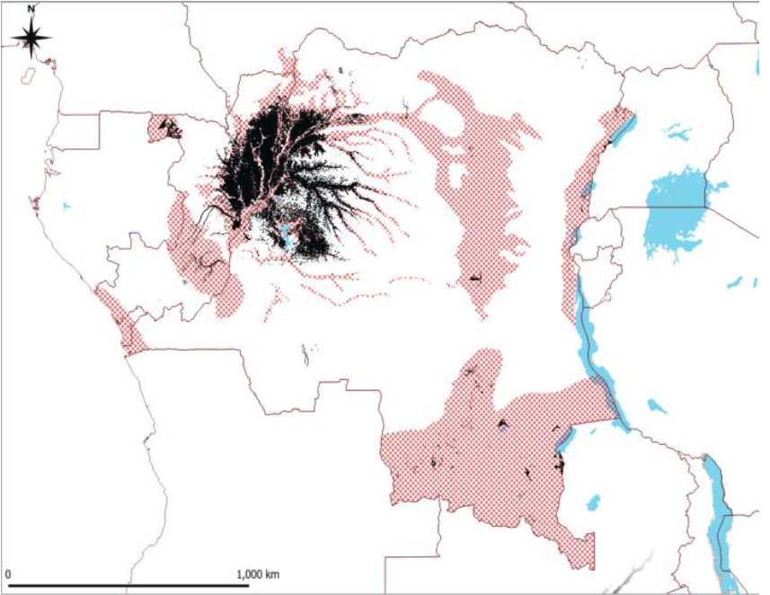
Figure 11: Extent of peatlands in the DRC
The connections between peatlands and the different mechanisms that are the REDD+ strategy, the ongoing reforms, particularly land use planning and land reform, being important, the DRC plans to:
Clearly define legal protection principles and protocols for overlapping land uses in peatlands in the National Peatlands Strategy and/or include them in ongoing land use planning reform;
Adopt clear peatland protection provisions in the planned revision of the Forest Code, capitalizing on the Sustainable Forest Management Program (PGDF) and the DRC's new REDD+ investment plan for 2021-2030, as part of the National REDD+ Strategy Framework, supported by CAFI, with the objective of considering the high value of peatland forests in carbon sequestration and the provision of other ecosystem services of major importance;
Through the National Peatlands Strategy, clarify and implement, as far as possible, the commitments made through international conventions and initiatives for the protection and sustainable management of peatlands, including the Ramsar Convention;
Invest in building national capacity and expertise, both institutionally and technically, in relation to sustainable peatland management;
Harness the current interest in Congo Basin peatlands to advance the DRC government's current agenda and priorities for peatland enhancement and protection;
Define a Communication, Information and Education plan in connection with the national capacity building program on peatlands;
Ensure a better connection between the National Peatland Strategy and the various international, sub-regional and national initiatives related to the management and enhancement of peatlands.
In addition to peatland restoration measures, the mitigation measures planned for the forest sector in this document build on other nature-based solutions. These include the following measures in particular:
Promotion of traditional and modern afforestation and reforestation techniques with a view to preserving forests;
Support for the development of community forestry as a tool for conserving biodiversity and combating the loss of forest cover in rural areas;
Enhancement of MEOR tools (Methodology for the Assessment of Restoration Opportunities) at the national level by integrating the enhancement of traditional knowledge in the conservation of biodiversity around protected areas; and
Support for initiatives allowing the establishment of the platform on the restoration of forests and landscapes.
In implementing these measures, the DRC will rely on the Global Standard for Nature-based Solutions27.
Figure 12 below illustrates the emissions projections for the BAU baseline scenario of AFOLU sector emissions, fully correlated to the national emissions balance sheet. The graph shows that emissions more than doubled over the period 2010 to 2014, reaching 830.53 Mt CO2e. Between the period 2014 and 2018, there was a clear trend towards the reduction of emissions, of the order of 36%, which would be justified by the significant investments and structural changes (measures and regulations) of management in the sector. targeting the drivers of deforestation and aiming to bend the deforestation curve. The year 2015 thus marked the start of the implementation phase of REDD+, commonly referred to as phase 2 of REDD+.
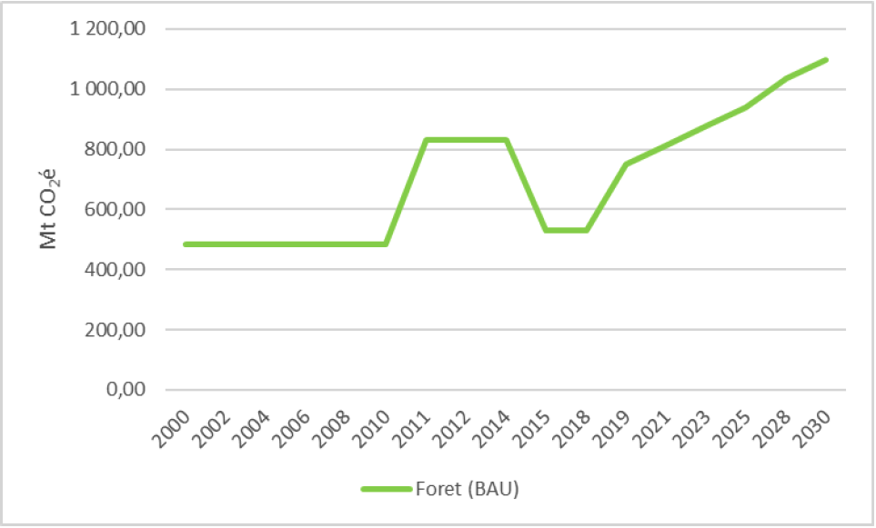
Figure 12: Projected emissions from the Forestry and other Land Use (BAU) sector
The estimate of GHG reductions in the AFOLU sector, targeted at 28% (Figure 12), is based on the achievement of 27 integrated mitigation actions by 2030 (Table 4).
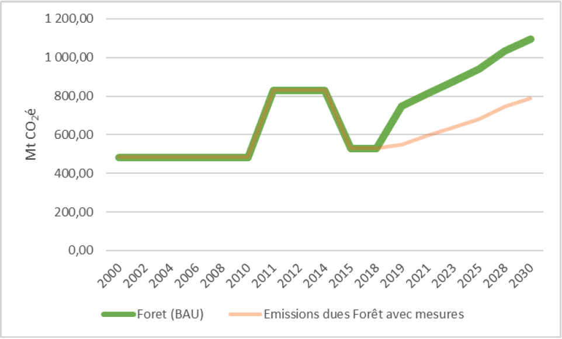
Figure 13: GHG reductions in the AFOLU sector
Figures 14and 15 show the evolution of emissions projections for the Energy, Agriculture and Waste sectors over the same horizon in the BAU scenarios and with measurements.
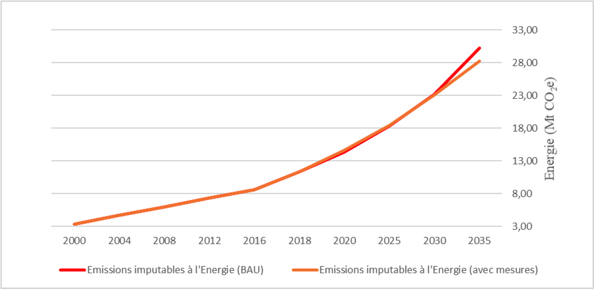
Figure 14: Evolution of projections of emissions from the Energy sector
The waste sector is characterized by an increase in emissions attributable to (i) the disposal of solid waste (90.4%) of all kinds generated by households, communities and businesses (businesses, industries, construction, agricultural residues, etc.), (ii) discharge of domestic wastewater (6.8%), and combustion in the open air. These emissions represent approximately 11% on average of all national emissions.
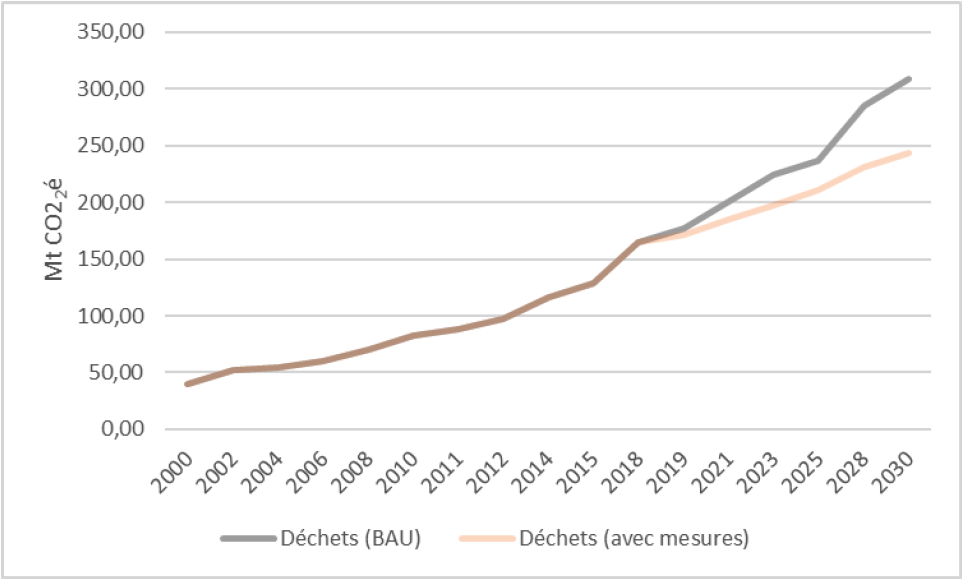
Figure 15: Evolution of projected emissions from the Waste sector
The full implementation of these various levers would ultimately lead to significant reductions in emissions.
Table 4 presents a summary of the interventions that the DRC intends to implement in order to achieve the reduction target targeted by 2030.
Table 4: Summary of GHG emission mitigation options and associated estimated costs.
| Sector | Objective | Actions | Indicators | Reduction potential in 2030 | Co-benefits of adaptation | Estimated cost (USD billion)28 | Implementation period | Alignment with the SDGs |
|
Energy |
Reduce the demand for wood energy and facilitate access to electricity |
Rural, peri-urban and urban electrification using renewable energy sources |
For hydroelectricity from 3GW in 2020 to 4GW in 2030 (ii) For wind, solar and geothermal from 2.9 MW in 2020 to 42.7 MW in 2030 (iii) 8 to 10 units installed |
74.2 to 94.6 Mt CO2e |
1.95 |
|
||
|
Promotion of improved stoves & improvement of carbonization |
Go from 12-15% to 25-30% yield (ii) 3 million households have FA units29 |
1.05 |
||||||
|
Promotion of renewable energies |
Renewable Energy Act 2014 amended (ii) Number of residences and institutions, manufacturing industries equipped with solar photovoltaic systems |
0.28 |
||||||
|
Transition to energy-efficient cooking |
Number of households using biogas, LPG technologies; and briquettes made from agricultural residues or biodegradable household waste |
0.63 |
||||||
|
Industrial plantations - Wood energy |
130,000 ha of plantations for energy purposes |
0.18 |
||||||
|
Develop and improve urban and interurban transport |
Promotion of mass transportation |
At 10 urban centers (cities and towns) equipped with: traffic master plan; (ii) New public transport system (Bus, Rail, etc.); (iii) Number of road, rail (interconnection), river and lake communication infrastructure built/rehabilitated; (iv) Number of assembly units for new low-emission vehicles locally (in terms of technology transfer) |
1.1 |
|||||
|
Agriculture |
Sedentarize agriculture |
Promotion of technical itineraries aimed at the sedentarization of farmers, particularly in forest areas, including wetlands |
1 million ha of irrigated perimeters developed and equipped (ii) About 150 farmers' organizations and peasant cooperatives established; (iii) Number of farmers using the guide to good agricultural practices for the management of fallow land, and the use of natural fertilizers; (iv) Number of sensitization and agricultural extension campaigns per year |
180 to 187 Mt CO2e (43%) |
1.7 |
|
||
|
Integration of agriculture in the national land use plan, developed in the implementation of the REDD+ strategy |
Existence of:
|
0.2 |
||||||
|
Promotion of intensive agriculture in savannah areas in order to limit pressure on natural forests |
1.6 million ha of land for intensive agricultural use developed (ii) Number of agricultural households using livestock waste and by-products in the form of biogas and natural fertilizers |
1.33 |
||||||
|
Promotion of rational and sustainable use of agricultural production areas to preserve agro-ecological conditions with a view to ensuring the stability of the forest cover |
1.2 |
|||||||
|
Intensification of agricultural food production (carbohydrates, oilseeds, legumes) in savanna zones and degraded forests |
1.3 |
|||||||
|
Intensification of cash crop production in secondary forest and savannah, but with sustainable agroforestry systems (cocoa, coffee, banana, special crops) to enhance the comparative advantages of the peasantry for these crops |
Number of new plantations of perennial crops and agroforestry in shrub savannahs or savannah-forest mosaics |
1.3 |
||||||
|
Popularization and awareness of good practices |
Number of awareness and extension campaigns on good agricultural practices per year |
0.8 |
||||||
|
Development of intensive farming |
Number of farms and agrosilvopastoral systems, |
1.2 |
||||||
|
Forestry and other Land Uses |
Reduce deforestation and forest degradation |
Promotion of traditional and modern afforestation and reforestation techniques with a view to preserving forests |
760 thousand ha of restored forests 15% of 7 million ha of marginal areas reforested |
182 to 192 Mt CO2e (i.e. 28%) |
1.45 |
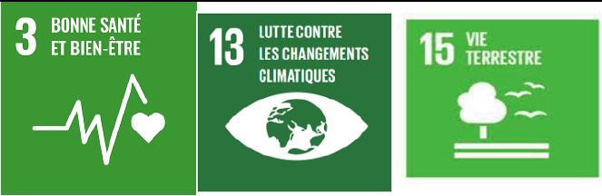 |
||
|
Support for the development of community forestry as a tool for conserving biodiversity and combating the loss of forest cover in rural areas |
Number of sensitization and popularization campaigns on reduced impact logging (EFIR) |
1.5 |
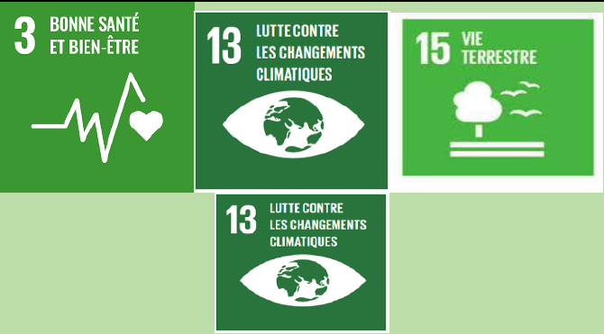 |
|||||
|
Restoration of wetlands, including peatlands used for agriculture and livestock |
Area of wetlands set aside and/or restored |
1.3 |
||||||
|
Enhancement of MEOR tools (Methodology for the Assessment of Restoration Opportunities) at the national level by integrating the enhancement of traditional knowledge in the conservation of biodiversity around protected areas |
Number of training, awareness and extension campaigns |
0.85 |
||||||
|
Support for initiatives allowing the establishment of the platform on the restoration of forests and landscapes |
Legal texts establishing the platform on forest restoration |
1.2 |
||||||
|
Strengthening of forest governance, in particular the fight against the illegal exploitation of timber and other forest resources, taking into account the studies, analyzes and tools produced in the implementation of the various relevant forest processes such as VPA-FLEGTf |
Existence of fraud surveillance and repression system |
1.2 |
||||||
|
Strengthen the carbon stock |
Sustainable timber harvesting management |
1.8 |
|
|||||
|
Sustainable management and rehabilitation of mining and oil exploitations |
Area of former mining and petroleum operations rehabilitated/restored in accordance with the Environmental Management Plan (EMP) |
0.09 |
||||||
|
Fight against bush fires |
Area set aside; Existence of monitoring systems and bush fire management plan |
0.11 |
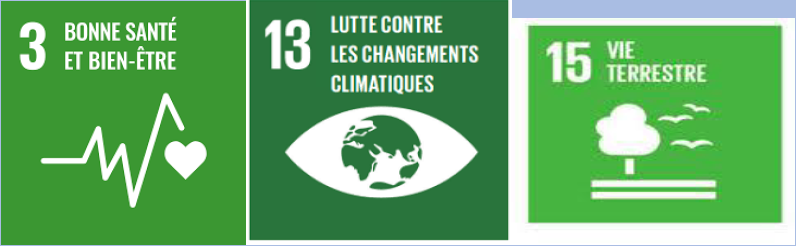 |
|||||
|
Peatland mapping and assessment |
Existence of peatland area rental map |
0.52 |
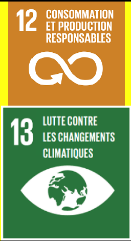 |
|||||
|
Waste |
Improve access to waste management services |
Strengthening the institutional and legal framework for waste management |
Existence of legal texts regulating waste management |
37 Mt CO2e |
0.14 |
|||
|
Rational waste management program |
0.44 |
|
||||||
|
Recover waste |
Energy recovery from waste (reduction of CH4 emissions from landfills) |
Number of Kwh produced from landfill gas recovery Number of households with access to this technology |
0.07 |
|
||||
|
Use of landfill gases |
0.29 |
|||||||
|
Aerobic composting |
Number of digesters available; Number of energy recovery and non-landfill gas plants in different urban areas. |
0.21 |
|
|||||
|
Energy production and organic fertilizer from solid waste, wastewater and sludge faeces |
0.21 |
|
||||||
| Total | 25.6 | |||||||
The Democratic Republic of Congo (DRC) is vulnerable to the various effects of climate change and does not have adequate capacities to deal with them. Indeed, the ND-GAIN index ranks the DRC 5th in the world among the countries most vulnerable to climate change in terms of their capacity to adapt30. The impacts of climate change are already perceptible across the country, in particular by the persistence of high temperatures, violent rains, land degradation, particularly by erosion, the lengthening of the dry season, the increase in drought sequences during rainy seasons, and floods31.
Climate projections in the DRC over the next few decades foresee an increase in temperatures of 3ºC to 5ºC, a decrease in precipitation and an increase in its variability, as well as an increase in extreme phenomena32. These climatic variations will have a significant impact on the country's main climate-sensitive economic sectors. The National Action Program for Adaptation to Climate Change (PANA, 2006) identifies the sectors of water resources, forestry, agriculture and the coastal zone as the most vulnerable to the effects of climate change.
6.1.1. Impacts, risks and vulnerabilities to climate change
Vulnerability and climate risk assessment studies in the DRC, carried out as part of the implementation of PANA (2006), taking into account the popular perception in general as well as scientific considerations, have identified five major climate risks:
heavy rains;
coastal erosion;
riparian flooding;
heat waves; and
seasonal droughts.
Following the application of MAGICC-ScenGen projections on the evolution of rainfall (rainy season), and the average maximum annual temperature, the four climatic zones were defined as presented in Table 4 (PANA, 2006 ).
Table 5: Climate zones
| Area | City/landmark | East longitude | South latitude | Years | Rainfall (mm) | Temperature |
|
I |
matadi |
12-15º |
5º-7º |
2005 |
1100 |
25.2 |
|
2100 |
850 |
29.1 |
||||
|
II |
Kinshasa |
12.5º |
2.5º-5º |
2005 |
1800 |
25.0 |
|
2100 |
1900 |
28.2 |
||||
|
III |
Kindu |
17.5º |
2.5º-7.5º |
2005 |
1700 |
25.2 |
|
2100 |
1630 |
29.1 |
||||
|
IV |
Lubumbashi |
27.5º |
7.5º-12.5º |
2005 |
1100 |
20.4 |
|
2100 |
900 |
24.7 |
Source: Second National Communication (2009:79)
Throughout the DRC, annual temperature trends indicate a gradual increase. On the other hand, the rains will experience two different situations: an increase especially in the Cuvette and a decrease in precipitation elsewhere with the shortening of the rainy season, as one advances towards the extreme South, Katanga in particular would experience, in the long run, from 2020 – less than 5 months of rainy season against 7 currently.
Table 5 provides some details on the spatial and temporal distribution of exposure and impact indicators.
Table 6: Inventory of the most common climate risks for the DRC
| Risk | Impact | Loss of human life | Duration (days) | Extent (km2) | Frequency (%) | Tendency |
|
Rains intense |
5 |
2 |
3 |
4 |
3 |
|
|
Seasonal drought |
2 |
1 |
2 |
4 |
3 |
|
|
floods Residents |
3 |
2 |
2 |
2 |
2 |
|
|
Crisis scorching |
3 |
2 |
2 |
4 |
3 |
|
|
Coastal erosion |
5 |
1 |
2 |
2 |
2 |
Source ; NAPA (2006:16)
Legend: Estimates are calculated on a potential scale.
Impacts: 1 = $1 per capita, 2 = $10, 3 = $100, 4 = $1000, 5 = $10,000
Loss of human life: 1 = 1 person per event, 2 = 10 people,
3 = 100 people, 4 = 4,000 people
Duration: 1 = 1 day, 2 = 2 days, 3 = 100 days (one season), 4 = 1,000 days (over a year)
patial extent: 2 = 10Km2, 3 = 100 Km2, 4 = 1,000 Km2
Frequency: 1 = 1% probability (some years), 2 = 10% probability, 3 = 100% probability (annual)
Trend indicators: average increase ; significant increase
Another COMIFAC study confirms the trends expressed in PANA, based on the MAGICC-SCenGen model. This assessment of climate change, at the scale of the Congo Basin33, based on a state-of-the-art multi-model and multi-scenario ensemble, used for global and regional climate change forecasts, indicates a robust increase in average temperature in the Congo Basin. entire Congo Basin, regardless of the baseline emission scenario. In addition to average temperatures, major variations in temperature extremes are also projected. In terms of total annual precipitation, the surveyed set shows no major change in the project area, again, regardless of the baseline emissions scenario. However, Variations in precipitation characteristics are to be expected. The forecast variations in terms of the intensity of heavy precipitation indicate a strong increase over most of this area. Similarly, a resurgence of episodes of drought in the rainy season is very likely. All these changes could have a considerable impact on the agricultural and hydro-energy systems of the region, even if the average annual availability of water resources remains constant.
Thus the climatic characteristics in this particular area, subdivided into five climatic zones (Table 6) of which three cover the DRC (Figure 7), show a lot of variations. For example, the rainy season which changes from the JJA season (June-July-August) in the northern parts to the DJF season (December-January-February) in the southern parts, and from a unimodal regime (North and South ) to a bimodal regime in the center. In addition, climatic changes are predominant by and large, with humidity conditions in the center of the domain compared to the northern and southern border regions.
Table 7: Details of the five sub-zones
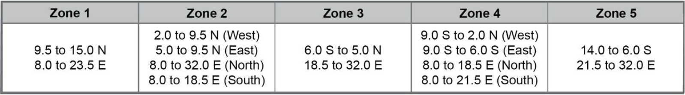
Figure 16: Distribution of climatic zones in the Congo Basin
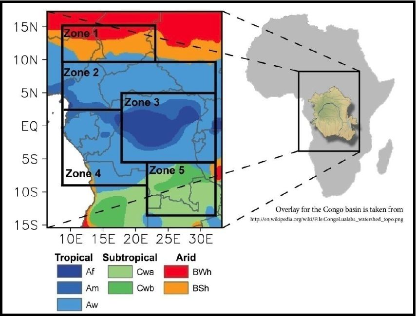
Source: Haensler et al., 2013
The colors in the map highlight the different climates found in this region ranging from tropical climate types in the center to arid regions even along the northern margins. The classification is based on the Koeppen-Geiger climate classification.
The Third National Communication (MECNT, 2014) shows that the impacts of climate change on Current evapotranspiration and potential evapotranspiration, simulated for the 2046-2065 horizon using the PITMAN hydrological model for the Bukama reference station, show an increase around 10 to 15% compared to the historical reference period. Furthermore, the analysis of future rainfall trends at different time intervals (interannual and decadal) shows that there is a slight difference between the annual averages for the 2046-2065 and 2081-2100 horizons, which would reflect the trends of the variability of the historical reference period. However, it is necessary to note a significant disturbance of the seasonal distribution of rainfall for the horizons 2046-2065 and 2081-2100. This change in the distribution of rainfall characteristics associated with the increase in temperature will lead to the resurgence of extreme hydrological phenomena, such as floods and droughts, gully erosion of soils and landslides, and the disruption of services provided by aquatic ecosystems; namely: supplying domestic water, hydroelectricity, irrigation, navigation, etc.
As for sea level rise scenarios, in its analysis of the time series of sea level height in the coastal zone from January 1993 to December 2012, Longandjo34 shows a trend towards sea level rise. sea of about 2.2 mm per year, i.e. a rise of about 4.00 cm over two decades
The DRC developed a National Action Program for Adaptation to Climate Change (NAPA) in 2006. This program assesses the risks and vulnerability to the impacts of climate change at the national level and identifies urgent and immediate adaptation activities that meet current and anticipated adverse effects of climate change, including extreme events. The main sectors identified relate to water resources, forestry, agriculture and the coastal zone. The process of identifying the axes of urgent and immediate intervention made it possible to select ten priority adaptation options below:
electrification of urban and rural areas;
collecting and drilling water wells;
development of water reservoirs;
the fight against erosion and flooding;
rational management of forest resources;
the protection of coastal zones;
the construction and rehabilitation of communication channels (roads, railways and rivers)
sedentarization in rural areas;
strengthening the capacity of agricultural production; and
capacity building of national meteorological services.
The DRC has already made several efforts to implement urgent adaptation actions in the sectors of agriculture, community recovery and the fight against coastal erosion, particularly within the framework of certain adaptation projects implemented. implemented in accordance with the areas of intervention identified in the NAPA. Since 2014, a process of updating the orientations of the NAPA and integrating the issue of adaptation into sectoral policies and strategies, following a participatory and multidisciplinary approach, has been initiated as part of the National Plan for Adaptation to Changes (NAP).
While the NAPA aimed to identify urgent and priority actions in terms of adaptation to climate change, within the framework of the NAP, it is a question of integrating the adaptation dimension into national and provincial development planning by considering the following priority sectors:
Conservation of forest ecosystems and biodiversity
Strengthening the resilience of the agricultural sector
Climate Risk Management in Peasant Agriculture
Disaster risk reduction and coastal zone protection
Strengthening the resilience of the health sector
6.2.1. Conservation of forest ecosystems and biodiversity
Adapting forest management to climate change will ensure energy supply and livelihoods. Conservation measures should be put in place at specific sites where ecosystems are at risk of degradation. Certain actions may be taken, in particular:
More effective inventory and monitoring of forests taking into account existing capacities. Various monitoring systems have already been developed. They can, however, be subject to improvements, taking into account the potential impacts of climate change;
Conservation measures should be put in place in specific sites where ecosystems are at risk of degradation;
Involvement of Local Communities and Indigenous Peoples in the negotiations of social clauses with logging and mining operators;
Raising awareness of the various actors involved in logging on violence and the human rights of men and women;
Initiation of pilot projects on non-timber forest products (NTFP) sectors with local communities and indigenous peoples;
Reforestation and domestication of species of great ecological, economic and cultural value, etc.
6.2.2. Strengthening the resilience of the agricultural sector
The following specific actions are envisaged to strengthen the resilience of the agricultural sector to the effects of climate change:
Realization of zoning for land allocation, in order to circumscribe the areas to be allocated specifically to agricultural activities;
Promotion of good sustainable farming practices, distribution to farmers of improved and resilient seeds and popularization of soil enrichment techniques;
Support for the organization of marketing circuits and a price policy for the sale of remunerative agricultural products to producers;
Supervision and support of farmers in their agricultural activities;
Strengthening of agricultural extension;
Promotion of agronomic research;
Development of tools and procedures for managing agricultural climate crisis situations;
Multiplication of meteorological observation stations;
Involvement of the State, in the name of national solidarity, in the event of exceptional climatic accidents, to ensure compensation for risks;
Subsidies for small farmers, who are increasingly vulnerable, with a view to adopting new agro-ecological practices capable of sustaining their farms;
Selection of resilient varieties at the level of agricultural research centers and universities;
Promotion of sustainable agricultural sectors;
Constitution of strategic reserves of food products; development and dissemination of research products;
Structuring of farmers' organizations and improvement of agricultural governance;
Integration of the gender approach;
Strengthening of human and institutional capacities;
Capacity building of farmers' organizations.
Multiplication of meteorological observation stations;
Establishment of a dynamic agricultural calendar for each crop with the involvement of agro-meteorologists and agronomists.
The strengthening of individual and collective prevention efforts at the level of agronomic and technological research, the harmonization of public support for prevention investments, the development of tools and procedures for managing situations of agricultural climatic crises;
The development of the capacity to pool risks, in time and space, with a large possible number of PA farms and other members of the mutual;
6.2.3. Climate Risk Management in Peasant Agriculture
Implementation of early warning solutions by: (i) improving people's access to multi-risk early warning systems and information and assessments relating to disaster risks; (ii) the establishment of partnerships around meteorological services relating to the early warning needs of rural women and to drought; (iii) identification of preventive solutions to agricultural landslides; and (iv) the development of intervention plans for the implementation of the early warning system for women in subsistence farming.
Implementation of response solutions through hydro-agricultural development and the mapping of programs for the implementation of agricultural water control technologies;
Capacity building of extension workers, while taking gender into account, in rural radio stations for climate risk alerts;
Use of agro-meteorology to prevent climatic risks.
Subsidies for small farmers, who are increasingly vulnerable, with a view to adopting new agro-ecological practices capable of sustaining their farms.
6.2.4. Disaster risk reduction and coastal zone protection
Analysis, evaluation and mapping of hydro-climatic risks;
Assessment of vulnerabilities and capacities;
Monitoring and early warning of hydro-climatic risks (floods, drought, soil erosion (urban and agricultural), landslides, etc.);
Development of information and communication documents on climate risks and their dissemination.
Strengthening of institutional and regulatory capacities for the integrated management of vulnerable coastal zones;
Implementation of coastal erosion control measures in the area between Banana and Nsiamfumu (26 km);
Support for resilient income-generating activities and strengthening of the early warning system of coastal areas vulnerable to climate change.
6.2.5. Management of water resources and environmental sanitation
Additional dredges or widenings, so that excess water drains freely.
Adoption of river stabilization techniques in risk areas
Improving the prevention of extreme weather events and floods (for example) through early warning systems and strengthening the resilience of water resources through innovations and modifications of water resource practices (construction of water supply structures in villages: wells, rehabilitation of springs, diversion of rivers, etc.).
Improved access to clean water, sanitation and hygiene in rural and peri-urban areas;
Support for the Ecole et Village Assainis (EVA) program, established at the national level by developing a strategy centered around the community and its needs and which gives families the opportunity to make informed choices while strengthening their resilience.
6.2.6. Strengthening the resilience of the health sector
Improving access to public health services for poor populations vulnerable to climate change by: (i) improving, building, rehabilitating and maintaining health infrastructure and equipment; (ii) improving people's access to basic health services in order to reduce risks.
Table 7 presents a summary of the interventions that the DRC intends to implement in order to be able to achieve its priority objectives of adaptation to the impacts of climate change by 2030. The main sectors identified concern water resources, forestry, agriculture and the coastal zone.
Table 8: Summary of interventions in the field of adaptation and their estimated costs
| Sector | Objective | Shares | Indicators | Mitigation co-benefits | Estimated cost (Billions USD) | Implementation period | Alignment with the SDGs |
| Forest |
Sustainably manage forest ecosystems and biodiversity |
Development of forest resource development projects (NTFPs, community forestry, etc.) with Local Communities and Indigenous Peoples, ensuring the application of legal provisions |
Number of projects implemented |
|
1.15 |
2021-2026 |
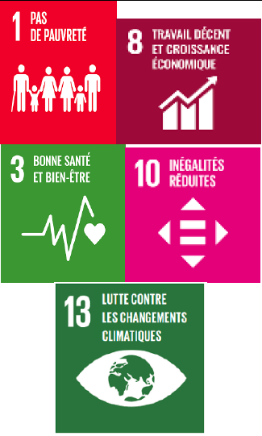 |
|
Reforestation of degraded areas with species of great ecological, economic and cultural value for communities |
Reforested area |
Restoration of degraded ecosystems |
1.61 |
2021-2026 |
|
||
|
Development of agroforestry plantations in degraded areas |
Area of areas occupied by agroforestry plantations |
Restoration of degraded lands |
0.58 |
2021-2026 |
|
||
|
Guidance and support for sustainable fishing and fish farming micro-projects |
Number of micro-projects implemented |
|
0.23 |
2021-2030 |
|
||
|
Promotion of projects to reorient populations towards economic activities with reduced impact on forest ecosystems |
Number of projects implemented |
|
0.06 |
2021-2030 |
|
||
|
Involvement of local populations in the management of forest ecosystems in their area |
Number of people involved |
|
0.06 |
2021-2030 |
|
||
|
Valorization of the traditional knowledge of local populations linked to the conservation of ecosystems |
Type of knowledge capitalized |
|
0.06 |
2021-2030 |
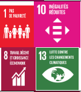 |
||
|
Strategic coordination of climate change adaptation programs, plans, initiatives |
Existence of a coordination structure |
|
0.06 |
2021-2030 |
|
||
|
Promoting Sustainable Land Management (SLM) |
8 M ha to be restored and managed sustainably |
Restoration of agricultural and forestry land |
0.50 |
2021-2030 |
|
||
| Agriculture |
Strengthen the resilience of the agricultural sector |
Integration of climate change concerns into sector planning and budgeting at all levels (national, provincial and local) |
Number of development plans taking into account the integration of adaptation to climate change |
Optimization of the use of natural resources and regulation of carbon and nitrogen cycles through sustainable agricultural production |
1.27 |
2021-2030 |
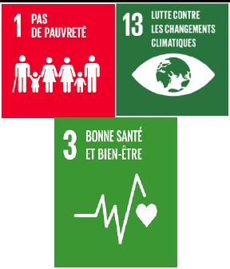 |
|
Production and dissemination of seeds resilient to the effects of climate change |
|
|
0.92 |
2021-2030 |
|
||
|
Development of the zoning program in order to define the zones to be allocated specifically to agricultural activities |
Area of areas to be specifically allocated to agricultural activities |
Optimization of the use of natural resources |
0.58 |
2021-2030 |
|
||
|
Collection and processing of climate data by INERA and METTELSAT and regular dissemination of weather reports and seasonal forecasts |
Number of weather reports and seasonal forecasts published |
|
0.23 |
2021-2030 |
|
||
|
Popularization of soil and water management techniques in agriculture |
|
Sustainable management/restoration of degraded soils |
0.69 |
2021-2030 |
|
||
|
Support for the structuring of farmers' organizations and agricultural governance |
Percentage of target population, disaggregated by sex, age and province |
Strengthened agricultural governance |
0.29 |
2021-2026 |
|
||
|
Support for the organization of marketing circuits and a price policy for the sale of remunerative agricultural products to agricultural producers |
Percentage of target population |
Strengthened agricultural governance |
0.17 |
2021-2026 |
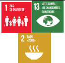 |
||
|
Creation and rehabilitation of agricultural service tracks |
Number of kilometers of agricultural service tracks created and rehabilitated |
Efficient Resource Distribution and Uses |
0.69 |
2021-2030 |
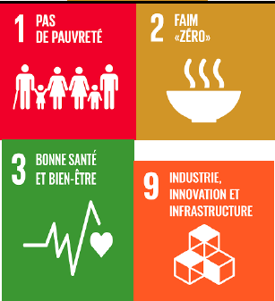 |
||
|
Promotion of (i) cultivation practices allowing agricultural activities to settle, (ii) improved and/or resilient seeds, and (iii) soil and water management techniques in agriculture accessible to farmers |
Number of improved and/or resilient seeds |
|
0.23 |
2021-2030 |
|||
|
Development and dissemination of meteorological observation stations across the country |
Number of meteorological observation stations installed |
Strengthened agricultural governance |
0.17 |
2021-2030 |
|
||
|
Capacity building and empowerment of women |
Number of women having benefited from capacity building |
Human and institutional capacities strengthened |
0.23 |
2021-2030 |
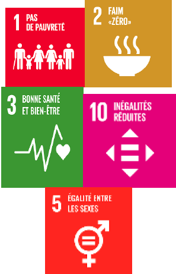 |
||
|
Development of alternative energies to wood energy in order to protect the forest (solar, gas, or at least improved stoves, etc.) |
Number of types of alternative energy to wood energy developed |
Protection of ecosystems |
0.17 |
2021-2030 |
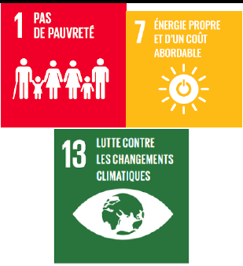 |
||
|
Capacity building for adaptation and management of the impacts of climate change on agricultural production and food security |
Number of households having benefited from capacity building |
Human and institutional capacities strengthened |
0.06 |
2021-2030 |
|
||
|
Support for research and innovation to strengthen the resilience of the agricultural sector to the adverse effects of climate change |
Number and type of support provided for research and innovation |
Innovation and productivity |
0.23 |
2021-2030 |
|
||
|
Creation of Agricultural Business Clusters (PEA) and promotion of agro-business |
Number of businesses created |
Job creation |
0.46 |
2021-2030 |
|
||
|
Ensure the climate risk management in smallholder agriculture |
Implementation of early warning systems |
Number of intervention plans for the implementation of the early warning system for women in subsistence farming developed |
Innovation and productivity |
0.58 |
2021-2030 |
|
|
|
Implementation of response measures in the event of natural disasters |
|
Innovation and productivity |
2.88 |
2021-2030 |
|
||
|
Development of subsidy mechanisms for small farmers, who are increasingly vulnerable, with a view to adopting new agro-ecological practices capable of sustaining their farms |
Number of small peasant producers having benefited from subsidies |
Job creation Efficient distribution and use of resources |
0.23 |
2021-2030 |
|
||
| Coastal area |
Reduce the disaster risk and protect coastal areas |
Assessment of vulnerabilities and human and institutional capacity needs |
Number of studies carried out on vulnerabilities and human and institutional capacity needs |
Human and institutional capacities strengthened |
0.58 |
2021-2026 |
|
|
Strengthening of the early warning system for vulnerable coastal areas and hydro-climatic risk areas (floods, drought, soil erosion (urban and agricultural), landslides, volcanic eruption, etc.) |
Number of early warning systems for vulnerable coastal zones and hydro-climatic risk zones installed |
Innovation and productivity |
0.29 |
2021-2030 |
|
||
|
Implementation of coastal erosion control measures in vulnerable coastal areas, including area between Banana and Nsiamfumu (26 km) |
Number of coastal erosion control measures in littoral zones put in place between Banana and Nsiamfumu (26 km) |
Preservation of natural spaces |
0.35 |
2021-2030 |
|
||
|
Protection of erosion zones by using appropriate erosion control techniques |
Surface area of erosion zones protected by the use of appropriate erosion control techniques |
Preservation of natural spaces |
0.16 |
2021-2030 |
|
||
|
Support for resilient household income-generating activities |
Number of people/households having received support for IGAs |
|
0.75 |
2021-2030 |
|
||
|
Education, Information and awareness on disasters and climate risks. |
Number of communication plans implemented |
Optimization of the use of natural resources |
0.23 |
2021-2030 |
|
||
| Water resources |
Managing water resources sustainably and cleaning up the environment |
Development of the sanitation strategy and law |
Number of sanitation laws developed |
Strengthened climate governance |
0.01 |
2021-2026 |
|
|
Development of water resources development and management plans by basin or sub-basin |
Number of water development and management plans per basin or sub-basin |
Strengthened climate governance |
0.35 |
2021-2026 |
|
||
|
Creation/Rehabilitation of water supply structures in villages |
Number of water supply structures installed |
Strengthened climate governance |
0.92 |
2021-2030 |
|
||
|
Promotion of river stabilization techniques in risk areas |
Number of risk areas of the river stabilized |
Innovation |
0.46 |
2021-2030 |
|
||
|
Strengthening the resilience of vulnerable populations (women and children) through support for the Healthy Schools and Villages program |
Number of Healthy School and Village Programs implemented |
Enhanced food and nutrition security |
0.35 |
2021-2030 |
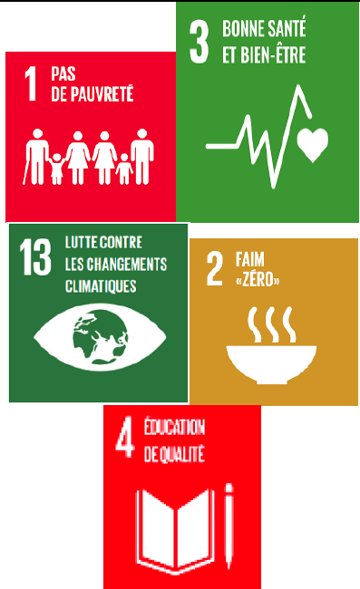 |
||
|
Promotion of pro-poor approaches for the provision of sanitation infrastructure and services |
Number of infrastructure and sanitation services installed as part of pro-poor approaches |
Protection of ecosystems |
0.22 |
2021-2030 |
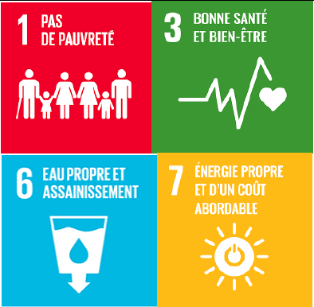 |
||
|
Production, management and dissemination of information on water resources and hydraulic/agro-hydraulic developments |
Number of communication plans implemented |
Strengthened climate governance |
0.06 |
2021-2030 |
|
||
|
Improved access to drinking water |
Number of households with access to drinking water (rural, urban) |
Home improvement |
0.23 |
2021-2030 |
|
||
|
Improved access to sustainable waste management services and wastewater treatment |
Number of households with access to sanitation services |
Home improvement |
0.20 |
2021-2030 |
|
||
|
Improved access to communication (roads and ICT) and opening up of vulnerable rural areas |
Number of households with access to information |
Improved quality of life |
0.32 |
2021-2030 |
|
||
| Health |
Facilitate access to health services and improve quality of life |
Construction/rehabilitation and equipment of health facilities |
Number of health facilities built, rehabilitated or equipped |
Improved health |
0.92 |
2021-2030 |
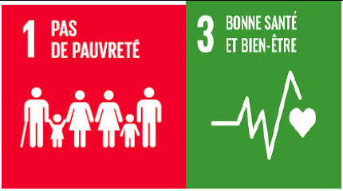
|
|
Strengthening of human and institutional capacities and facilitation of access of vulnerable populations to basic health services |
Number of people with access to basic health services |
Improved health |
0.88 |
2021-2030 |
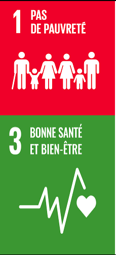 |
||
|
Promotion of the integration of the gender/youth/vulnerable groups approach in the fight against climate change |
Number of people and institutions trained |
Human and institutional capacities strengthened |
0.23 |
2021-2030 |
|||
|
Integration of the potential impacts of climate change on public health into policies and plans for development |
Number of plans or programs |
Strengthened climate governance |
0.06 |
2021-2030 |
|||
|
Development of synergies with other public health initiatives |
Types of synergy created Number and quality of committed actors |
Strengthened climate governance |
0.06 |
2021-2030 |
|||
| Energy |
Facilitate household access to clean energy at an affordable cost |
Promotion of alternative energy production methods (installation of solar, wind, biomass systems), |
Number of households with access to alternative energies |
Protection of ecosystems |
0.40 |
2021-2030 |
|
|
Improved local-scale climate modeling techniques to better predict future impacts |
Climate scenario identified |
Protection of ecosystems |
0.23 |
2021-2030 |
|
||
|
Development of water retention basins, construction of dykes to protect production infrastructure |
Number of developed watersheds |
Protection of ecosystems |
0.35 |
2021-2030 |
|
||
|
Promotion of the rational use of electrical energy, improvement of the management of the energy distribution network system |
Number of households with access to electricity |
Protection of ecosystems |
0.17 |
2021-2030 |
|
||
| TOTAL | 23.08 |
The new and improved transparency framework requires the NDC MRV system to transparently report on progress made towards the targets set out in the DRC NDC and to track progress in implementing mitigation and recovery actions. adaptation - as well as the use and results of the means of implementation and support, including capacity building, technology transfer and financing. The MRV system also considers non-GHG impacts on the environmental, social and economic impacts of NDC actions that would lead to transformational change towards achieving national sustainable development goals. In the case of the DRC, this must take into account the
These national and international requirements for the three dimensions of MRV overlap and it is useful to demonstrate their links within the national MRV system. For example, financing, capacity building and technical support have a direct impact on the implementation of mitigation and adaptation actions. Therefore, the DRC NDC national MRV system will be useful to track and report on progress and use of support, as well as to facilitate the identification of challenges to inform policy changes essential to improve Implementation.
In the DRC, the mandate to coordinate and monitor the harmonious implementation of environmental action in general, and climate action in particular, is entrusted to the Ministry of the Environment and Sustainable Development (MEDD). The MEDD, through the Sustainable Development Department (DDD), coordinates all the dynamics of the implementation and monitoring of all issues relating to climate change. It is the focal point of the United Nations Framework Convention on Climate Change (UNFCCC). As such, the DDD ensures the preparation and production of national greenhouse gas (GHG) inventory reports, in collaboration with the various national institutions (the Ministry of Finance, the Interior, the agriculture, transportation, public works and infrastructure, industry, trade, rural development, land use planning, scientific research, planning, budget, public health, livestock, hydrocarbons, economy, mines; hydraulics and electricity, gender, universities) and other organizations, both nationally and internationally. The Ministry of Environment and Sustainable Development also drives the integration of environmental policies and strategies and climate change issues into national development plans. universities) and other organisations, both nationally and internationally. The Ministry of Environment and Sustainable Development also promotes the integration of environmental policies and strategies and climate change issues into national development plans. universities) and other organisations, both nationally and internationally. The Ministry of Environment and Sustainable Development also drives the integration of environmental policies and strategies and climate change issues into national development plans.
Under the leadership of the Ministry of Environment and Sustainable Development, a National Committee on Climate Change has been established. It brings together delegates from various public administrations and institutions, universities, research centers, national organizations and civil society in order to share a common vision and understanding in the implementation of projects likely to ensure the progress of interventions, initiatives and activities in the field of climate change in a harmonious and collaborative atmosphere.
A Technical Coordination Committee and thematic working groups have been set up to carry out the various activities, studies and reports. The Technical Coordination Committee is intended to be a consultation body and a space for dialogue, exchange and orientation between the stakeholders for the implementation of the NDC. It brings together delegates from different public administrations, institutions and organizations with a view to sharing a common vision and understanding in the implementation of projects likely to ensure the advancement of interventions, initiatives and activities in the field of climate change in an atmosphere harmonious and collaborative.
The functions of the Technical Coordination Committee are determined as follows: (i) Ensure the development of the NDC in a single streamlined national process under the technical responsibility of the MEDD; (ii) Facilitate coordination with the competent authorities at the national, provincial and local levels; (iii) Define the orientations and directives of the NDC process and decide on the actions to be carried out; (iv) Decide globally on the state of progress of the activities of the various projects and initiatives related to the NDC; (v) Review and exchange views on major issues relating to the implementation of the above-mentioned projects, as well as propose corrective measures; and (vi) Monitor and evaluate the implementation of the NDC process.
The DDD provides all reporting and communication to the Technical Coordination Committee and the Government, through the MEDD, to inform policies and strategic decisions that ensure that the NDC's MRV effectively supports sustainable development. of the country in accordance with its National Strategic Development Plan (PNSD).
The following are key areas that are part of the Committee's mandate:
Review and establish the committee's objectives, terms of reference, composition and general working arrangements of the committee, the main one being the endorsement and subsequent reporting of NDC MRV at national and global levels;
Provide advice and feedback on scope, timing, costs and quality concerns, or guidance on program priorities, that arise during the planning, design and implementation of NDC-related projects;
Facilitate access to resources needed to review and report on MRV of the NDC and approve projects at key stages;
Revise and review studies, research activities in line with the NDC to facilitate quality assurance and alignment with strategic priorities;
Develop and make operational an effective communication plan on the MRV of the NDC.
Figure 8 below summarizes the institutional arrangements for monitoring NDC implementation, including the national NDC MRV process.

Figure 17: Institutional arrangements for monitoring NDC implementation
Table 12 below presents a list of relevant actors who will be involved in the preparation and subsequent implementation of the NDC, in accordance with their national role or responsibility and their role in the process of implementing the NDC.
In addition, during the preparation phase for the implementation of the NDC, it will be possible to consider the participation of other specialized institutions such as the National Institute for Agronomic Studies and Research (INERA), the Meteorology and Remote Sensing by Satellite (METTELSAT), the National Agricultural Statistics Service (SNSA), the National Observatory for Regional Planning (ONAT), etc.
The results-based monitoring and evaluation system will be the main repository and, therefore, the appropriate platform for monitoring and managing information and data for the environment and natural resources sector, chaired by the MEDD. Thus, all data relating to climate change, including the NDC MRV managed and reported by the NDC MRV technical working committee, will be processed and accessible by the results-based monitoring and evaluation system. Assessing and defining the most suitable data sources will be important for any MRV system to be effective.
The NDC technical working committee for MRV that will be set up will play an essential role in the production and reporting of data and information at the national level and reports and will be significantly involved in data collection, transparency and verification. The committee will ensure that the DRC MRV system links mitigation, adaptation and finance, as well as capacity building support and technology transfer as critical aspects of the implementation of the MRV. Cdn.
Primary data will generally be collected at the provincial level and sectors/institutions will have direct links to provincial levels to obtain data and information specific to the sector/priority action, including NDC MRV.
This will be done with the support of stakeholders at the provincial level, an opportunity for the engagement of NGOs, the private sector and development partners to provide inputs to the NDC MRV process. The Ministry of Environment and Sustainable Development (MEDD) will provide oversight and coordination by facilitating data management flows from provincial governments to central level institutions. The Climate Change Division within the Sustainable Development Department of the MEDD is the technical focal point for the collection, processing, entry and analysis of data related to the MRV of the NDC.
The National Institute of Statistics (INS) of the DRC will be at the heart of national data production processes and will have the ultimate role of validating national statistics through the authentication of data and information, and therefore the approval of national statistics shared with different users. The National Institute of Statistics (INS) will facilitate the development and application of data collection protocols and will annually revise national standards and guidelines for data entry and aggregation to guide data and information on mitigation and adaptation produced by the sectors.
Table 9: list of relevant actors for the implementation of the NDC
| Stakeholders | Responsibility/role | Role in the implementation of the NDC |
|
Ministry of Environment and Sustainable Development (MEDD) |
The MEDD leads and is the main national coordinator of environment and climate change activities in the DRC on behalf of the government. It is responsible for the development of national and international reports (national GHG inventories, national communications on climate change, Biennial Update Reports (BUR), NDC, national plans on climate change, etc.), as well as management of data related to the forest sector. It acts as the Focal Point of the UNFCCC, the GEF and the GCF. Responsible for the National Forest Monitoring System, national forest inventories. It is an important source of information on forest dynamics in the DRC. It will be one of the stakeholders consulted for knowledge exchange, data collection and dissemination on the Forest Reference Level in the DRC. |
It will coordinate all activities for the preparation and implementation of project interventions, as well as those related to monitoring, reporting and improving transparency. |
|
Ministry in charge of Agriculture (MINAGRI) |
Responsible for the design, formulation, coordination, promotion, monitoring and evaluation of agricultural development policies. It is in charge of managing all the data relating to agriculture published in the SNSA directories (animal and plant production). |
It will be responsible for coordinating tasks related to the collection and improvement of data for the monitoring and reporting of agricultural activities. |
|
Ministry of Rural Development (MINDER) |
Responsible for achieving food security and the sustainable and effective improvement of the living conditions of rural populations. |
It will coordinate activities and data management related to rural activities and due to its representation across the country, it will provide operational and technical information for all aspects of the AFOLU sector at different levels. |
|
Ministry of Fisheries and Livestock |
Responsible for the sustainable management of fish and animal resources and their contribution to the food and nutritional security of the population. It is in charge of managing all data relating to breeding and fishing. |
It will be responsible for coordinating tasks related to the collection and improvement of data for the monitoring and reporting of fishing and farming activities. |
|
Ministry of Territorial Planning |
Rational Land Use Planning (Zoning) Officer |
|
|
Ministry of Land Affairs |
Responsible for the management of the general property regime, land and real estate regime |
|
|
Ministry in charge of Planning (Ministry of Planning) |
Responsible for the production of national statistics and the management of all data related to national and regional planning. |
It will ensure compliance with national statistical standards. |
|
Ministry of Health |
Implement the Government's policy in the field of health |
|
|
Ministries in charge of foreign affairs and international cooperation |
Seek, negotiate and mobilize external resources for national development. |
Organize meetings of bilateral and multilateral partners and set up a permanent consultation framework at the national level. |
|
Ministries in charge of the interior and social affairs |
Manage disasters and natural calamities |
Coordinate the interministerial commission on disasters and natural calamities. |
|
Ministry of Scientific Research |
Promote scientific research and technology transfer in the field of climate change |
|
|
INS |
The National Institute of Statistics (INS) of the DRC is at the heart of national data processes and has the ultimate role of validating national statistics through the authentication of data and information, and therefore the approval of statistics national shared with the outside. |
The National Institute of Statistics (INS) will facilitate the development and application of data protocols and annually revise national standards and guidelines for data entry and aggregation to guide data and reporting. information on mitigation and adaptation produced by the sectors. |
|
Ministry of Finance (Ministry of Finance) |
Responsible for national budget planning; it actively participates in various activities related to public expenditure review and financial management. |
It will guarantee the effectiveness of the DRC's financial contribution to this project. |
|
Ministry of Gender, Family and Children |
It was created to develop and coordinate the implementation of government measures related to the promotion and respect of women's rights and the protection of the family, to manage and coordinate social aspects. It is responsible for improving the legal and institutional framework to ensure the participation of women in development, the representation of women at all levels and the integration of gender into policies and country programs. |
It will support the integration in the project of elements that contribute to closing the gender gap in climate change adaptation and mitigation activities, as well as more balanced access between men and women to resources. national. It will also support the development of strategies to reduce the gender gap in project activities, particularly those related to capacity building. |
|
Ministry in charge of Energy (Hydraulic Resources and Electricity), ) |
Responsible for the management of statistics of the supply, production and consumption of energy resources at the national level. |
He will be responsible for coordinating tasks related to the collection and improvement of data for the monitoring and reporting of fuel supply, production and consumption activities. |
|
Ministry in charge of Hydrocarbons |
Responsible for the management of statistics on the supply, production and consumption of hydrocarbons at the national level |
It will be responsible for coordinating tasks related to the collection and improvement of data for the monitoring and reporting of supply, production and consumption activities of liquid fuels. |
|
Ministry of transportation |
It is in charge of managing all data relating to the vehicle fleet (rolling vehicles, aviation, river and lake navigation) |
It will be responsible for coordinating all tasks related to the collection and improvement of data for the monitoring and reporting of transport sector activities. |
|
National Committee on Climate Change |
At present, the guidelines for the implementation of projects and programs are monitored within the framework of separate steering committees. |
Share a common vision and understanding in the implementation of projects likely to ensure the advancement of interventions, initiatives and activities in the field of climate change in a harmonious and collaborative atmosphere. |
|
Technical committee for coordinating and monitoring the implementation of the NDC |
It has an operational and consultation role between the key entities of the sectoral ministries and the technical partners involved in the various components of the NDC. Its role is to help analyze and technically validate all the data and technical information produced within the framework of the NDC. |
The Technical Coordination Committee aims to be a consultation and orientation body between the stakeholders for the implementation of the NDC. It brings together delegates from different public administrations, institutions and organizations with a view to sharing a common vision and understanding in the implementation of projects likely to ensure the advancement of interventions, initiatives and activities in the field of climate change in an atmosphere harmonious and collaborative It will support aspects related to the information associated with the NDC for the Energy, AFOLU and Waste sectors and the realization of its implementation. |
|
Provincial (Technical) Committee on Climate Change |
Its role is to help analyze and technically validate all the data and technical information produced at the provincial level within the framework of the NDC. |
The Technical Coordination Committee aims to be a consultation and orientation body between the stakeholders at the provincial level. It brings together delegates from the various provincial public administrations, institutions and organizations with a view to sharing a common vision and understanding in the implementation of projects likely to ensure the advancement of interventions, initiatives and activities in the field of climate change in a harmonious and collaborative atmosphere |
|
Universities and research centers |
They are responsible for research, innovation and formal training in all areas, including those related to climate change, as well as adaptation and mitigation measures. |
They will provide information on climate change, methodologies and approaches for monitoring, estimating GHGs and tracking progress in implementing NDCs. They will be invited to participate in trainings, workshops and meetings in order to have an effective exchange of knowledge and good practices. In addition, universities could support training processes and the inclusion of these subjects in university degree programs. This partnership with academic institutions will allow dissemination of the scientific basis on the need for natural capital accounting and legislation for various initiatives under this process. |
|
Civil society organizations |
They play an important role at the local level in organizing, raising awareness, building capacity and implementing specific climate change adaptation and mitigation actions. Some organizations that will be involved in the project will be: CEDEN, CODELT, GTCRR, LINAPYCO, Logos Premier, OCEAN, REBAC, REFADD, REPALEF-RDC, RRN, among others. |
They will be invited to participate in activities related to the implementation of climate change policy and law, capacity building and the production/collection of data and information relevant to the functioning of the MRV system and the GHG inventories. |
|
Private sector organizations |
They are a key player in the achievement of NDCs and the implementation of climate change adaptation and mitigation activities, as they are also affected by it. Some examples of private sector organizations are COPEMECO (Confederation of Small and Medium Enterprises), FIB (Federation of Wood Industrialists), FEC (Federation of Congo Enterprises), SAFBOIS and SIFORCO, and agro-industries. |
Its participation is required to enable the implementation of climate change policy and law, both for the application of mitigation and/or adaptation measures and the achievement of NDCs and for the provision data and information for the operation of MRV and GHG inventories. |
|
The Central Bank of the DR Congo (BCC) |
Define and implement the country's monetary policy, the main objective of which is to ensure the stability of the general level of prices. |
|
|
Specialized services (INERA, METELSAT, SNSA, ONAT) |
Characterized by a very low contribution to global GHG emissions, a very low GHG intensity relative to Gross Domestic Product (GDP), and the lowest human development index according to the 2020 Human Development Report (UNDP, 2020 ), the DRC must therefore face many challenges in terms of socio-economic development. Moreover, the country must prioritize minimizing the risks of climate change impacts, due to the significant vulnerability of certain economic activities, such as agriculture and forestry.
This section provides an overview of means of implementation in terms of (i) institutional arrangements; (ii) capacity building, (iii) technology transfer, and (iv) the need for relevant funding likely to facilitate and accelerate the implementation of mitigation and adaptation measures.
The implementation of the NDC will be done, under the leadership of the Ministry of Environment and Sustainable Development (MEDD), in collaboration with various sectoral ministries concerned at the local, provincial, national level and other stakeholders, in particular young people, women and indigenous peoples.
The results of specific studies will regularly feed into the national climate change policy, and key laws and regulations will be enacted, including the Climate Change Law and the Land Use Planning Law. A legal text will be adopted, establishing the appropriate institutional arrangements in order to ensure the coordination of intersectoral actions concerning the fight against climate change.
The operationalization of the NDC will only be possible in an inclusive approach, guaranteeing gender equity, equal rights between women and men, boys and girls, integrating children, young people, Indigenous Peoples and other vulnerable groups.
Since 2009, to comply with the commitments relating to the promotion of women's rights and gender equality to which it has subscribed, the Government has adopted a National Gender Policy accompanied by an action plan. In 2020, a report on the analysis of gender mainstreaming in climate change adaptation planning as well as a plan to strengthen the resilience of indigenous women to the effects of climate change.
The DRC also has a Youth Policy and its Strategic Implementation Plan.
Recently, a bill on fundamental principles relating to the rights of Indigenous Pygmy Peoples was adopted by the National Assembly.
Clear lines of communication will be developed at different levels (local, provincial, national and international) and between different sectors and stakeholders, ensuring gender equality, participation of young people and Indigenous Peoples.
Under the Paris Agreement, developed countries are committed to facilitating technology transfer and capacity building to developing countries. Many developing countries have expressed their capacity needs to support and identify gaps both in terms of technology and expertise to ensure follow-up of bilateral and multilateral resources.
It is essential that the provisions of the Paris Agreement on capacity building are successfully implemented. Technology transfer and capacity building will be required to fully implement DRC Contributions to Mitigation and Adaptation. Specific needs identified in this framework include among others:
Access to and removal of barriers to the dissemination of appropriate clean technologies;
Building climate information systems;
Promotion of renewable energies and energy efficiency, including the involvement of the private sector;
Establishment of public-private partnerships.
Private sector organizations are key players in the delivery of NDC interventions and in the transparent implementation of climate change adaptation and mitigation activities, without neglecting social and environmental aspects. Their participation is necessary to enable the implementation of climate change policy and law, both for the application of mitigation measures and the realization of NDC interventions and for the provision of data and information for the operation of the MRV system and the production of national GHG inventories.
During the preparation phase of the roadmap for the implementation of the NDC, the participation of private sector organizations will be defined, as well as the activities of the NDC in which these organizations will be involved, although it is foreseeable that they will be linked to the implementation of climate change policy and law and contributions on the processes of production/collection of data and information relevant to the MRV system and national GHG inventories.
The involvement of private actors will be particularly relevant by carrying out projects to achieve the objectives of the energy and agriculture sectors.
In addition, the participation of representatives of the private sector in the DRC is currently ensured by two entities: the Federation of Commercial Enterprises (FEC) and the Federation of the Wood Industry (FIB). However, the government is implementing the identification and mapping of additional key stakeholder representatives, their main focus areas and interests, to define the decisive incentives that could enable them to better and more participate in the implementation. of the NDC.
As part of the NDC revision process, in-depth analysis and consultations of different stakeholders and sectoral experts have been engaged to produce conditional and unconditional cost estimates for mitigation and adaptation actions up to 2021 and 2030. The estimated total cost of approximately twenty-five point six ( 25.6) billion US dollars for the 30 identified NDC mitigation actions, and over twenty-three point zero eight ( 23.08) billion US dollars for the 52 adaptation priorities, representing a funding need of approximately forty-eight point sixty-eight (48.68) billion US dollars (USD).
Given the numerous budgetary constraints to which the DRC is subject, only a minimum part of its contribution, unconditional measures for mitigation and adaptation combined, representing approximately two percent (2%) of the total estimated financing, can be financed by the own resources. Indeed, the innumerable development priorities at the social, economic, educational, health, infrastructure, etc. levels will receive priority allocation of the resources mobilized at the national level and will in no way have to suffer competition from the financing of the NDC.
However, there may be situations where the priority development objectives of the DRC will be aligned with those of the NDC. Only such a scenario would justify the financing of the activities of the NDC on own funds.
In accordance with the Paris Declaration on the Effectiveness of Official Development Assistance, the DRC encourages donors wishing to support the implementation of its NDC to align themselves with the Government's objectives. These objectives integrate, in addition to those presented in the NDC, in particular those of the National REDD+ Strategy and its Investment Plan, as well as the sectoral policies developed within the framework of the REDD+ interventions financed
under the said Investment Plan, in particular the National Territorial Development Policy.
Taking into account that the DRC has the second largest area of tropical forests in the world, alone accounting for more than 60% of the rainforest in the Congo Basin, the largest basin with a net absorption of greenhouse gases. greenhouse, the country plays a crucial role in global climate change mitigation. The loss of this forest would represent a considerable release of greenhouse gases.
Thus, given its carbon potential and the gradual emergence of the carbon market, the DRC government validated in the Council of Ministers ten urgent measures relating to the sustainable management of natural forest resources.
Among these measures, the institutionalization of the carbon tax and the creation of the carbon market regulation authority come first. These aim to enable the national economy to benefit from international capital resulting from carbon finance.
Indeed, the capture of revenue from the sale of carbon credits will contribute in particular to: (i) increasing the national budget; (ii) the compensation of ecosystem services of sequestration and storage of atmospheric carbon by the forests of the DRC; (iii) financing the measures provided for in the Nationally Determined Contribution (NDC) under the Paris Agreement.
The DRC reiterates the importance of the negotiations on Article 6 of the Paris Agreement being finalized so that the country can sell carbon credits through the international carbon market and thus finance the measures of its NDC . Also, in order to allow the country to benefit from adequate compensation for its efforts to reduce and avoid carbon emissions from deforestation and forest degradation, which will serve the whole world, it is essential that a a fair and robust carbon price is established at the global level. With this in mind, in its contracts for the sale of emission reductions on the carbon markets, the DRC reserves the right to negotiate an adequate price.
In the DRC, the regulation and the right of ownership and transfer of ownership applicable to Carbon Emission Reduction Units (UREC) is established by the 2018 Approval Order. It follows that these carbon rights, whose legal status is defined in Article 3 of the said Approval Order, must be materialized exclusively in the National REDD+ Register provided for this purpose. The DRC has decided to develop its own Register of emission reduction transactions in order to avoid multiple declarations of emission reductions from the forest, i.e. double-counting, aimed at integrating all REDD+ programs/projects. developed in the country. This Registry will track and control all emission reductions generated by each programme/project and will provide regular information on issuances, transfers and sales of emission reductions.
Starting from a very low level of emissions per capita and per GDP, it will be difficult for the DRC to materialize its emission reduction commitments and contribution to the global effort while transferring ownership of these emission reductions. Consequently, the DRC wishes to be able to account for the emission reductions generated within the framework of its NDC.
Next, the DRC hopes to sell the emission reductions generated under its NDC to buyers – both public and private – who have ambitious targets for mitigating their own emissions, based on science and publicly available in an updated NDC. update or a climate action plan.
One of the mechanisms that could be used in the financing of the DRC's NDC measures is that of payments for ecosystem services (PES). PES are a potentially important source of financing for the DRC, which provides ecosystem services of global value. As the DRC is home to the second largest tropical forest in the world in terms of area, and a biodiversity that qualifies it as one of the 17 mega-diverse countries in the world, it provides ecosystem services that benefit the whole world, including countries. developed, among others:
The provision of a geographically defined ecosystem service, namely the conservation of a rich and unique biodiversity, which does not exist elsewhere than in the DRC; and
The provision of an ecosystem service with multiple benefits, namely carbon sequestration, water regulation and soil retention, and consequently the regulation of the regional and global climate.
The DRC plans to set up a national PES program, in order to ensure that these ecosystem services, provided by the DRC, can be compensated through PES mechanisms that reduce the incentives for deforestation, with a view to conserving biodiversity and habitats as well as as carbon sinks in forest ecosystems. For example, this program may pay the owners of forest resources, i.e. forest communities, local or national governments, forestry companies or farmers, to preserve forest resources, establish wildlife corridors and/or maintain the most popular crop varieties. more favorable to natural ecosystems. With a view to regeneration, such a mechanism could encourage agricultural installations in savannahs, cultivation methods under shade,
By setting up PES mechanisms in the DRC with a view to financing the measures proposed in the NDC, it will be crucial to ensure anchoring in land use planning tools, a link with land tenure security as well as synergies between the fight against deforestation and poverty reduction, with a view to avoiding adverse effects.
MEDD. National Action Program for Adaptation to Climate Change.2006
Ministry of Planning. National Strategic Development Plan. 2018
MEDD. Third National Communication to the United Nations Framework Convention on Climate Change. 2014
MEDD. First Biennial Update Report. Unpublished
MEDD. National REDD+ Strategy Framework of the Democratic Republic of Congo. December 2012
MEDD. Forest Reference Emission Level for Reducing Emissions from Deforestation in the Democratic Republic of Congo. January, 2018
MEDD. National plan for adaptation to the impacts of climate change. November, 2020
UNDP. Human Development Report. 2019
De Wasseige et al.. Interactive forest atlas of the Democratic Republic of the Congo. 2009
Ministry of Energy and Hydraulic Resources. PDGIE Report. 2018
Ministry of Planning. INS report. 2014, 2015, 2017
United Nations Organization. Sustainable Development Goals Report. 2020
National Energy Commission of the Ministry of Energy and Hydraulic Resources SE4ALL-RDC. 2019
Advisory Group of Experts. Handbook dealing with institutional arrangements for supporting measurement, reporting and verification (MRV) tools/ climate action transparency and climate action support. June, 2020
Advisory Group of Experts. Towards an Enhanced Transparency Framework under the Paris Agreement. June, 2020.
MEDD. Contribution Determined at the National Level of the DRC. 2015
The Minister of Agriculture. DRC National Agricultural Investment Plan. 2013
MEDD. Policy, Strategy and Action Plan in the fight against climate change. Revised in 2020
Ministry of Energy. National Energy Policy. 2009
Ministry of Gender, Women, Families and Children. National Gender Policy. 2008
Ministry of Youth, Sports and Recreation. Youth Policy. 2009
MEDD. National Sanitation Policy. 2013
Ministry of Territorial Development. National Spatial Planning Policy. 2020
Ministry of Energy. Law No. 14/011 relating to electricity. June, 2014
MEDD. Law 011-2002 of August 29, 2002 on the Forest Code. August, 2002
Jonas Kibala Kuma (2020), Poverty and unemployment in the DRC: inventory, analyzes and perspectives, p. 14
UNDP, 2020, The Human Development Report 2020, United Nations Development Program 1 UN Plaza, New York, NY 10017 USA, 40p
Decision 1/CP.21 on the adoption of the Paris Agreement↩
Second national communication, 2009.↩
http://www.ins.cd/ (2021); INS, 2017 Statistical Yearbook of the DRC↩
Agricultural Sector Study, Phase II, Agricultural and Rural Development Master Plan, Summary Document of Provincial Plans, Final Report, 2010.↩
DRC, 2010. The following figures are taken from this report.↩
DRC, 2011.↩
Jonas Kibala Kuma (2020), Poverty and unemployment in the DRC: inventory, analyzes and perspectives, p. 14↩
Ministry of the Environment, Nature Conservation and Tourism, 2013, National Environment, Forests, Waters and Biodiversity Program "PNEFEB" -2nd generation↩
Haensler, A., Saeed, F. and Jacob, D. (2013): Assessment of projected climate change signals over central Africa based on a multitude of global and regional climate projections. In: Climate Change Scenarios for the Congo Basin. [Haensler A, Jacob D, Kabat P, Ludwig F (eds.)]. Climate Service Center Report No. 11, Hamburg, Germany, ISSN: 2192-4058.↩
Ministry in charge of Agriculture (2009), Agricultural Policy Notes↩
Same↩
National Agricultural and Rural Sector Recovery Program (PNSAR) 1997-2001: monograph, Volume 1.↩
Ministry of Agriculture, 2009, Agricultural Policy Notes, 71p.↩
DRC Renewable Energy ATLAS 2nd Edition 2016↩
Paris Agreement, adopted by decision 1/CP.21 http://undocs.org/fr/FCCC/CP/2015/10/Add.1↩
GL 2006 IPCC↩
Vision of the DRC for 2050, (PNSD, 2016)↩
Methodology from “McKinsey GHG Abatement Cost Curve V2.0”, McKinsey & Company, 2009↩
IPCC 2019, 2019 Refinement to the 2006 IPCC Guidelines for National Greenhouse Gas Inventories, Calvo Buendia, E., Tanabe, K., Kranjc, A., Baasansuren, J., Fukuda, M., Ngarize S., Osako, A., Pyrozhenko, Y., Shermanau, P. and Federici, S. (eds). Published: IPCC, Switzerland.↩
Industrial Processes and Use of Products↩
According to the IUCN (2016), nature-based solutions are “actions aimed at protecting, sustainably managing and restoring natural or modified ecosystems, to directly address societal challenges in an effective and adaptive way while ensuring human well-being and benefits for biodiversity”.↩
Insert reference to the 2014 Law↩
High Ambition Coalition – 30x30 Initiative: https://www.hacfornatureandpeople.org/coalition-de-la-haute-ambition-pour-la-nature-et-les-peuples-fr#fact↩
The map below is an estimate made by Greifswald Mire Centre. The Democratic Republic of Congo will initiate work to harmonize the various maps with the data from the baseline study as well as the map produced by CongoPeat.↩
2020-020-En.pdf (iucn.org) https://portals.iucn.org/library/sites/library/files/documents/2020-020-Fr.pdf↩
Estimated cost per ton CO2 equivalent around 100 to 130 USD↩
Improved stoves↩
Second national communication, 2009.↩
Haensler, A., Saeed, F. and Jacob, D. (2013): Assessment of projected climate change signals over central Africa based on a multitude of global and regional climate projections. In: Climate Change Scenarios for the Congo Basin. [Haensler A, Jacob D, Kabat P, Ludwig F (eds.)]. Climate Service Center Report No. 11, Hamburg, Germany, ISSN: 2192-4058.↩
Quoted by Fils, National Strategy and Action Plan 2017-2023 for the Reduction of Natural Risks and Disasters in the DR. congo↩